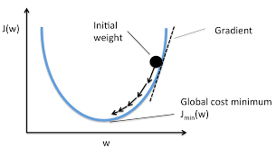

Py: Customer Churn Classification#
This notebook was originally created by Josh Jaroudy for the Data Analytics Applications subject, as Case Study 1 in the DAA M05 Classification and neural networks module.
Data Analytics Applications is a Fellowship Applications (Module 3) subject with the Actuaries Institute that aims to teach students how to apply a range of data analytics skills, such as neural networks, natural language processing, unsupervised learning and optimisation techniques, together with their professional judgement, to solve a variety of complex and challenging business problems. The business problems used as examples in this subject are drawn from a wide range of industries.
Find out more about the course here.
Define the Problem:#
Customer churn, also known as customer attrition, customer turnover or customer defection, is the loss of clients or customers. For many businesses, a high level of customer churn can negatively impact their profits, particularly because it is often quite costly for a business to acquire new customers.
For this reason, many businesses like to understand which customers are likely to churn in a given period. Armed with this information, businesses can employ different strategies to try to retain their customers. This case study investigates the use of neural networks and gradient boosting machines for predicting which customers are likely to churn.
When trying to predict customer churn, it may seem like a relatively straightforward task to obtain some past customer data and use this to determine whether future customers will churn. However, the task of deciding exactly what the output of such a prediction model should be is quite complex, and heavily dependent on how the model will be used by the business.
Purpose:#
This notebook investigates the use of neural networks and gradient boosting machines for predicting which customers are likely to churn. This code is used in Case Study 1 in Module 5.
References:#
The dataset used in this notebook was sourced from a Kaggle competition that aimed to predict customer churn behaviour for a telecommunications provider: https://www.kaggle.com/blastchar/telco-customer-churn.
This dataset contains 7,043 rows (one for each customer) and 21 features, including information about each customer’s:
services with the company, such as phone, internet, online security, online backup, device protection, tech support, and streaming of TV and movies;
account information, such as how long they have been a customer, contract, payment method, paperless billing, monthly charges and total charges; and
demographic information, such as gender, age range, and whether they have a partner and dependents.
The response variable in the dataset is labelled ‘Churn’. It represents whether each customer left the service provider in the month preceding the data extract date.
Packages#
This section imports the packages that will be required for this exercise/case study.
import pandas as pd # Pandas is used for data management.
import numpy as np # Numpy is used for mathematical operations.
# Matplotlib and Seaborn are used for plotting.
import matplotlib.pyplot as plt
import matplotlib.image as mpimg
import seaborn as sns
%matplotlib inline
import os
import itertools # Used in the confusion matrix function
from tensorflow import keras # Keras, from the Tensorflow package is used for
# building the neural networks.
# The various functions below from the Scikit-learn package help with
# modelling and diagnostics.
from sklearn.preprocessing import LabelEncoder, MinMaxScaler
from sklearn.model_selection import train_test_split
from sklearn.metrics import log_loss
from sklearn.ensemble import GradientBoostingClassifier # For building the GBM
from sklearn.metrics import auc, roc_auc_score, confusion_matrix, f1_score
from sklearn.inspection import plot_partial_dependence
from tensorflow.keras.models import Sequential
from tensorflow.keras.layers import Dense, BatchNormalization
from tensorflow.keras.wrappers.scikit_learn import KerasRegressor
import tensorflow as tf
Functions#
The section below defines some general functions that are used in this notebook. Other functions that are specific to each type of model are defined in the section for that model.
# Define a function to split the data into train, validation and test sets.
# This uses the `train_test_split` function from the sklearn package to do the
# actual data splitting.
def create_data_splits(dataset, id_col, response_col):
'''
Splits the data into train, validation and test sets (64%, 16%, 20%)
All columns on `dataset` other than the `id_col` and `response_col` will be
used as features.
Params:
dataset: input dataset as a pandas data frame
id_col: (str) the name of the column containing the unique row identifier
response_col: (str) the name of the response column
Returns:
train_x: the training data (feature) matrix
train_y: the training data response vector
validation_x: the validation data (feature) matrix
validation_y: the validation data response vector
test_x: the test data (feature) matrix
test_y: the test data response vector
'''
# Split data into train/test (80%, 20%).
train_full, test = train_test_split(dataset, test_size = 0.2, random_state = 123)
# Create a validation set from the training data (20%).
train, validation = train_test_split(train_full, test_size = 0.2, random_state = 234)
# Create train and validation data feature matrices and response vectors
# For the response vectors, convert Churn Yes/No to 1/0
feature_cols = [i for i in dataset.columns if i not in id_col + response_col]
train_x = train[feature_cols]
train_y = train[response_col].eq('Yes').mul(1)
validation_x = validation[feature_cols]
validation_y = validation[response_col].eq('Yes').mul(1)
test_x = test[feature_cols]
test_y = test[response_col].eq('Yes').mul(1)
return train_x, train_y, validation_x, validation_y, test_x, test_y
# Define a function to print and plot a confusion matrix.
def plot_confusion_matrix(cm, classes,
normalise=False,
title='Confusion matrix',
cmap=plt.cm.Blues):
'''
This function prints and plots a confusion matrix.
Normalisation of the matrix can be applied by setting `normalise=True`.
Normalsiation ensures that the sum of each row in the confusion matrix is 1.
'''
plt.imshow(cm, interpolation='nearest', cmap=cmap)
plt.title(title)
plt.colorbar()
tick_marks = np.arange(len(classes))
plt.xticks(tick_marks, classes, rotation=45)
plt.yticks(tick_marks, classes)
if normalise:
cm = cm.astype('float') / cm.sum(axis=1)[:, np.newaxis]
thresh = cm.max() / 2.
for i, j in itertools.product(range(cm.shape[0]), range(cm.shape[1])):
plt.text(j, i, cm[i, j],
horizontalalignment='center',
color='white' if cm[i, j] > thresh else 'black')
plt.tight_layout()
plt.ylabel('True response')
plt.xlabel('Predicted response')
Data#
This section:
imports the data that will be used in the modelling;
explores the data; and
prepares the data for modelling.
Import data#
The below code will read it into a pandas data frame.
We read directly from a URL, but pandas can also read from a file.
dataset = pd.read_csv(
'https://actuariesinstitute.github.io/cookbook/_static/daa_datasets/DAA_M05_CS1_data.csv',
header = 0)
Explore data (EDA)#
Prior to commencing modelling, it is always a good idea to look at the data to get an understanding of the:
available features;
the data types of the features (numeric, categorical, dates, etc.);
the distribution and missingness of the features;
correlations between features; and
relationships between features and the response variable.
The code below looks at some of these components of the Telco dataset.
# Check the available features, their data types and their missingness.
print(dataset.info())
<class 'pandas.core.frame.DataFrame'>
RangeIndex: 7043 entries, 0 to 7042
Data columns (total 21 columns):
# Column Non-Null Count Dtype
--- ------ -------------- -----
0 customerID 7043 non-null object
1 gender 7043 non-null object
2 SeniorCitizen 7043 non-null int64
3 Partner 7043 non-null object
4 Dependents 7043 non-null object
5 tenure 7043 non-null int64
6 PhoneService 7043 non-null object
7 MultipleLines 7043 non-null object
8 InternetService 7043 non-null object
9 OnlineSecurity 7043 non-null object
10 OnlineBackup 7043 non-null object
11 DeviceProtection 7043 non-null object
12 TechSupport 7043 non-null object
13 StreamingTV 7043 non-null object
14 StreamingMovies 7043 non-null object
15 Contract 7043 non-null object
16 PaperlessBilling 7043 non-null object
17 PaymentMethod 7043 non-null object
18 MonthlyCharges 7043 non-null float64
19 TotalCharges 7043 non-null object
20 Churn 7043 non-null object
dtypes: float64(1), int64(2), object(18)
memory usage: 1.1+ MB
None
# Check the number of unique values for each feature.
dataset.nunique()
customerID 7043
gender 2
SeniorCitizen 2
Partner 2
Dependents 2
tenure 73
PhoneService 2
MultipleLines 3
InternetService 3
OnlineSecurity 3
OnlineBackup 3
DeviceProtection 3
TechSupport 3
StreamingTV 3
StreamingMovies 3
Contract 3
PaperlessBilling 2
PaymentMethod 4
MonthlyCharges 1585
TotalCharges 6531
Churn 2
dtype: int64
# Print out the first 5 observations in the data.
dataset.head()
| customerID | gender | SeniorCitizen | Partner | Dependents | tenure | PhoneService | MultipleLines | InternetService | OnlineSecurity | ... | DeviceProtection | TechSupport | StreamingTV | StreamingMovies | Contract | PaperlessBilling | PaymentMethod | MonthlyCharges | TotalCharges | Churn | |
|---|---|---|---|---|---|---|---|---|---|---|---|---|---|---|---|---|---|---|---|---|---|
| 0 | 7590-VHVEG | Female | 0 | Yes | No | 1 | No | No phone service | DSL | No | ... | No | No | No | No | Month-to-month | Yes | Electronic check | 29.85 | 29.85 | No |
| 1 | 5575-GNVDE | Male | 0 | No | No | 34 | Yes | No | DSL | Yes | ... | Yes | No | No | No | One year | No | Mailed check | 56.95 | 1889.5 | No |
| 2 | 3668-QPYBK | Male | 0 | No | No | 2 | Yes | No | DSL | Yes | ... | No | No | No | No | Month-to-month | Yes | Mailed check | 53.85 | 108.15 | Yes |
| 3 | 7795-CFOCW | Male | 0 | No | No | 45 | No | No phone service | DSL | Yes | ... | Yes | Yes | No | No | One year | No | Bank transfer (automatic) | 42.30 | 1840.75 | No |
| 4 | 9237-HQITU | Female | 0 | No | No | 2 | Yes | No | Fiber optic | No | ... | No | No | No | No | Month-to-month | Yes | Electronic check | 70.70 | 151.65 | Yes |
5 rows × 21 columns
Prepare data#
Some data preparation is needed before the modelling can begin.
From the summaries in the EDA section above you can see that:
customerIDis the unique identifier for each observation;Churnis the response and takes values ‘Yes’ and ‘No’ with a ‘Yes’ rate of 26.5% (= 1,869/(5,174+1,869));Tenure,MonthlyChargesandTotalChargesare numeric features;TotalChargesis stored as categorical;
all other features are categorical (though many with only 2 levels); and
missing values are not a significant concern.
# Define the ID and response columns
id_col = ['customerID']
response_col = ['Churn']
# Get the list of features by type.
# Categorical features can be identified as those columns with only a few levels.
# This code selects the list of features with < 6 levels and puts the names
# into a list, excluding the id_col and response_col.
cat_cols = dataset.nunique()[dataset.nunique() < 6].keys().tolist()
cat_cols = [x for x in cat_cols if x not in id_col + response_col]
# Numerical features are left after the categorical features have been removed.
# List comprehension is used below to select the set of feature names not
# contained in the cat_cols, id_col, or response_col lists.
num_cols = [x for x in dataset.columns if x not in cat_cols + id_col + response_col]
# Convert TotalCharges to numeric and set equal to 0 where blank.
dataset.loc[dataset['TotalCharges'] == ' ','TotalCharges'] = 0
dataset['TotalCharges'] = pd.to_numeric(dataset['TotalCharges'])
# Check the number of levels for each categorical feature and the
# response variable.
for cat_col in cat_cols + response_col:
print(cat_col, dataset[cat_col].unique())
gender ['Female' 'Male']
SeniorCitizen [0 1]
Partner ['Yes' 'No']
Dependents ['No' 'Yes']
PhoneService ['No' 'Yes']
MultipleLines ['No phone service' 'No' 'Yes']
InternetService ['DSL' 'Fiber optic' 'No']
OnlineSecurity ['No' 'Yes' 'No internet service']
OnlineBackup ['Yes' 'No' 'No internet service']
DeviceProtection ['No' 'Yes' 'No internet service']
TechSupport ['No' 'Yes' 'No internet service']
StreamingTV ['No' 'Yes' 'No internet service']
StreamingMovies ['No' 'Yes' 'No internet service']
Contract ['Month-to-month' 'One year' 'Two year']
PaperlessBilling ['Yes' 'No']
PaymentMethod ['Electronic check' 'Mailed check' 'Bank transfer (automatic)'
'Credit card (automatic)']
Churn ['No' 'Yes']
# Check the updated feature types
dataset.dtypes
customerID object
gender object
SeniorCitizen int64
Partner object
Dependents object
tenure int64
PhoneService object
MultipleLines object
InternetService object
OnlineSecurity object
OnlineBackup object
DeviceProtection object
TechSupport object
StreamingTV object
StreamingMovies object
Contract object
PaperlessBilling object
PaymentMethod object
MonthlyCharges float64
TotalCharges float64
Churn object
dtype: object
Now that the data has been cleaned up, the marginal relationship between the features and the response can be analysed.
# Plot the mean churn rate by each of the candidate features.
# Loop over each feature.
for feature in [
'gender',
'SeniorCitizen',
'Partner',
'Dependents',
'tenure',
'PhoneService',
'MultipleLines',
'InternetService',
'OnlineSecurity',
'OnlineBackup',
'DeviceProtection',
'TechSupport',
'StreamingTV',
'StreamingMovies',
'Contract',
'PaperlessBilling',
'PaymentMethod',
]:
(
# create a binary 1/0 response column, where 1 indicates Churn = 'Yes';
# group by the values of the current feature;
# calculate the mean of the response; and
# plot.
dataset[[feature]]
.assign(Response=np.where(dataset.Churn == 'Yes', 1, 0))
.groupby(feature)
.agg('mean')
.plot.bar(color='Dodgerblue')
)
(
# The same is done for MonthlyCharges except that the value is rounded
# to the nearest $10 using np.round(, -1).
dataset[['MonthlyCharges']]
.assign(
Feature_MonthlyCharges=np.round(dataset['MonthlyCharges'], -1),
Response=np.where(dataset.Churn == 'Yes', 1, 0),
)
.drop(columns=['MonthlyCharges'])
.groupby('Feature_MonthlyCharges')
.agg('mean')
.plot.bar(color='Dodgerblue')
)
(
# TotalCharges is rounded to the nearest $1,000 using np.round(, -3).
dataset[['TotalCharges']]
.assign(
Feature_TotalCharges=np.round(dataset['TotalCharges'], -3),
Response=np.where(dataset.Churn == 'Yes', 1, 0),
)
.drop(columns=['TotalCharges'])
.groupby('Feature_TotalCharges')
.agg('mean')
.plot.bar(color='Dodgerblue')
)
<AxesSubplot:xlabel='Feature_TotalCharges'>


Modelling#
This section:
fits some models; and
evaluates the fitted models.
Gradient Boosting Machine (GBM)#
The first model to be fitted is a Gradient Boosting Machine (GBM). GBM applies boosting (see Section 5.3.3 of Module 5) in the context of decision trees.
The GBM will be used as a benchmark to compare to a neural network fitted later on.
To fit the GBM, the GradientBoostingClassifier() from the sklearn package is used.
Prepare data#
To prepare the data for the GBM model, the code below:
one hot encodes the categorical features; and
splits the data into train, validation, and test sets.
# One-hot encode categorical features including an indicator for NAs.
dataset_gbm = pd.get_dummies(dataset, columns=cat_cols, dummy_na=True)
# Split the data into train, valiation, and test sets.
train_gbm_x, train_gbm_y, \
validation_gbm_x, validation_gbm_y, \
test_gbm_x, test_gbm_y \
= create_data_splits(dataset_gbm, id_col, response_col)
Fit initial GBM (GBM 1)#
To create and train the model, 20% of the training data will be used as an (internal) validation set for early stopping, to prevent overfitting. The model will stop training if no improvement on this validation data has been observed for 50 consecutive iterations.
This is specified with validation_fraction = 0.2 and n_iter_no_change = 50.
Other hyperparameters used in the training:
n_estimators = 1000: specifies a maximum of 1,000 trees;learning_rate = 0.1: sets the learning rate to 10%;random_state = 1234: initialises the random seed for the model, for reproducibility; andverbose = 1: requests additional information be printed during training.
# Specify the GBM model.
gbm_model = GradientBoostingClassifier(n_estimators = 1000,
learning_rate = 0.1,
validation_fraction = 0.2,
n_iter_no_change = 50,
verbose = 1,
random_state = 1234)
# Train the model.
# 'train_gbm_y.values.ravel()' converts the series of response values into
# a 1D array which is the format expected by the .fit() method
gbm_model.fit(train_gbm_x, train_gbm_y.values.ravel())
Iter Train Loss Remaining Time
1 1.1021 6.82s
2 1.0617 7.96s
3 1.0286 7.71s
4 1.0003 7.72s
5 0.9774 7.58s
6 0.9570 7.43s
7 0.9398 7.27s
8 0.9251 7.16s
9 0.9115 7.20s
10 0.8997 7.16s
20 0.8311 6.78s
30 0.7995 6.65s
40 0.7822 6.48s
50 0.7657 6.36s
60 0.7534 6.24s
70 0.7434 6.18s
80 0.7341 6.06s
GradientBoostingClassifier(n_estimators=1000, n_iter_no_change=50,
random_state=1234, validation_fraction=0.2,
verbose=1)
Evaluate GBM 1#
The code below looks at some basic goodness of fit measures.
# Score the validation dataset.
# Obtain the predicted churn probabilities (Y_hat).
# The code below returns these in an array of form ([Prob(0), Prob(1)]).
# Keep the Prob(1) values only, i.e. the predicted churn probability (Y_hat).
train_y_preds = gbm_model.predict_proba(train_gbm_x)[:, 1]
validation_y_preds = gbm_model.predict_proba(validation_gbm_x)[:, 1]
# Obtain the predicted churn outcomes, G(X).
# Returns the predicted class as 0 for 'no churn' or 1 for 'churn'.
train_y_class = gbm_model.predict(train_gbm_x)
validation_y_class = gbm_model.predict(validation_gbm_x)
# Calculate the AUC on train and validation data.
{'train': roc_auc_score(train_gbm_y.values.ravel(), train_y_preds),
'validation': roc_auc_score(validation_gbm_y.values.ravel(), validation_y_preds)}
{'train': 0.8774950558946257, 'validation': 0.8589570358298064}
# Print the confusion matrix at a 50% threshold using the training data.
conf_mat_gbm1_train = confusion_matrix(train_gbm_y, train_y_class)
plot_confusion_matrix(conf_mat_gbm1_train, [0, 1])
# Print the confusion matrix at a 50% threshold using the validation data.
conf_mat_gbm1_validation = confusion_matrix(validation_gbm_y, validation_y_class)
plot_confusion_matrix(conf_mat_gbm1_validation, [0, 1])

# Calculate the F1 score.
{'train': f1_score(train_gbm_y, train_y_class),
'validation': f1_score(validation_gbm_y, validation_y_class)}
{'train': 0.6495086569957885, 'validation': 0.5618860510805501}
Estimate feature importance#
Feature importance provides a measure of how much the model predictions rely on a particular feature. The higher the importance of a feature, the more it contributes to the model’s performance.
The code below plot the importance of each feature in the GBM.
# Create a dictionary with name-importance pairs.
gbm_feat_imps = dict()
for feature, importance in zip(train_gbm_x.columns, gbm_model.feature_importances_):
gbm_feat_imps[feature] = importance
# Convert to a dataframe and order by importance.
# Note: the feature names become the index for the dataframe, and the importance
# is the first column (index 0).
gbm_fi = pd.DataFrame.from_dict(gbm_feat_imps, orient = 'index').rename(columns = {0: 'Importance'})
gbm_fi.sort_values(by = 'Importance', inplace = True)
# Plot the feature importances.
gbm_fi.plot(kind = 'barh', \
figsize = (12,16), \
title = 'Feature importance', \
color = 'Dodgerblue'
)
<AxesSubplot:title={'center':'Feature importance'}>

Examine effect of features#
It is important to understand the shape of the effects learned by the model, in order to:
understand what the model is doing; and
assess whether what the model has learned is reasonable given the business context.
A partial dependence plot (PDP) shows how each feature affects a model’s predictions. Partial dependence is calculated after a model has been fitted, by examining how the model’s predictions change when the value for one feature (or sometimes two or more features) is changed, with the values of all other features being held constant.
PDPs are used below to visualise the effect shapes for the model’s four most important features.
The y-axis of a PDP represents the marginal impact of the feature on the response variable. For example, if the calculated partial dependence is 0 on some part of the PDP line, then for that value of the feature, there is no impact on the response variable, relative to some central tendency of the response variable, which might be its mean or median value.
You are not required to know how to calculate a PDP for this subject. For this case study, you can use the PDPs below to visualise the effect shapes for the model’s four most important features.
# Extract the column indices for the four most important features
# on the training data.
gbm_pdp_idx = [i for i in range(len(train_gbm_x.columns)) if \
train_gbm_x.columns[i] in gbm_fi.tail(4).index.tolist()]
gbm_pdp_idx
[0, 1, 2, 50]
# Check that the right columns have been identified.
train_gbm_x.columns[gbm_pdp_idx]
Index(['tenure', 'MonthlyCharges', 'TotalCharges', 'Contract_Month-to-month'], dtype='object')
# Produce partial dependence plots.
# Loop over each feature rather than provide a list as this makes it
# easier to plot the data.
for idx in gbm_pdp_idx:
plot_partial_dependence(gbm_model, train_gbm_x, features = [idx],
line_kw={'color': 'Dodgerblue'})

These plots show that the churn rate:
decreases with tenure;
increases with monthly charges;
has an unclear relationship with total charges (but this will be affected by the correlation between monthly and total charges); and
increases for those on a monthly contract.
Note that a PDP for a binary feature like ‘Contract_Month-to-month’ is a bit misleading, as the feature can only take values of 0 or 1, so there are only two points on this PDP that make sense. What is important to take away from this PDP is that people on a month-to-month contract are more likely to be predicted to churn than those on a one or two month contract.
This finding can be used to sense check the model’s predictions. In this case, we have already seen from the Explore Data section above that, across the entire dataset, people on a month-to-month contract have a 43% churn rate, compared to 11% for those on a one year contract and 3% for those on a two year contract, so the direction of the PDP outcomes for the feature ‘Contract_Month-to-month’ makes sense.
Improve the model (GBM 2)#
Check the documentation for GradientBoostingClassifier() to see the hyperparameters available and try a few combinations to improve the performance.
The code below shows some experimentation with hyperparameter values.
# Add additional regularisation by capping the depth of trees at 2 and
# decreasing the learning rate for the model.
# Increase the number of trees (n_estimators) to counter some of the effect
# of the lower learning rate.
gbm_model_v2 = GradientBoostingClassifier(n_estimators = 2000,
learning_rate = 0.01,
max_depth = 2,
validation_fraction = 0.2,
n_iter_no_change = 50,
verbose = 1,
random_state = 1234)
gbm_model_v2.fit(train_gbm_x, train_gbm_y.values.ravel())
Iter Train Loss Remaining Time
1 1.1497 11.15s
2 1.1455 11.07s
3 1.1414 10.87s
4 1.1374 10.90s
5 1.1335 10.63s
6 1.1296 10.49s
7 1.1258 10.34s
8 1.1221 10.46s
9 1.1185 10.44s
10 1.1150 10.37s
20 1.0827 9.94s
30 1.0556 9.61s
40 1.0325 9.41s
50 1.0118 9.35s
60 0.9929 9.33s
70 0.9757 9.37s
80 0.9611 9.42s
90 0.9483 9.35s
100 0.9369 9.26s
200 0.8682 8.70s
300 0.8394 8.11s
400 0.8240 7.54s
500 0.8144 6.98s
600 0.8074 6.47s
700 0.8014 5.98s
800 0.7965 5.49s
GradientBoostingClassifier(learning_rate=0.01, max_depth=2, n_estimators=2000,
n_iter_no_change=50, random_state=1234,
validation_fraction=0.2, verbose=1)
Evaluate GBM 2#
# Score the validation dataset.
# Obtain the predicted churn probabilities, Y_hat.
validation_y_preds_v2 = gbm_model_v2.predict_proba(validation_gbm_x)[:, 1]
# Obtain the predicted churn outcomes, G(X).
validation_y_class_v2 = gbm_model_v2.predict(validation_gbm_x)
# Compare the AUC on validation data under model 1 ('old') and model 2 ('new').
{'new':roc_auc_score(validation_gbm_y.values.ravel(), validation_y_preds_v2),
'old':roc_auc_score(validation_gbm_y.values.ravel(), validation_y_preds)}
{'new': 0.861474435196195, 'old': 0.8589570358298064}
# Plot the confusion matrix at 50% threshold for model 2 - validation data
conf_mat_gbm2_validation = confusion_matrix(validation_gbm_y, validation_y_class_v2)
plot_confusion_matrix(conf_mat_gbm2_validation, [0, 1])
# Plot the confusion matrix at 50% threshold for model 1 - validation data
plot_confusion_matrix(conf_mat_gbm1_validation, [0, 1])
# Compare the F1 score for the two models.
{'new':f1_score(validation_gbm_y, validation_y_class_v2),
'old':f1_score(validation_gbm_y, validation_y_class)}
{'new': 0.5697211155378485, 'old': 0.5618860510805501}
The AUC and F1 scores shown above indicate that the changes made to create GBM 2 have had some small (relatively immaterial) improvements on the GBM’s performance.
Select final model (GBM final)#
# Select the final model and call it `gbm_model_final`.
gbm_model_final = gbm_model_v2
# Obtain the predicted churn probabilities, Y_hat, for the validation data.
validation_gbm_preds_final = gbm_model_final.predict_proba(validation_gbm_x)[:, 1]
# Obtain the predicted churn outcomes, G(X) for the validation data.
validation_gbm_class_final = gbm_model_final.predict(validation_gbm_x)
Simple neural networks built from first principles#
In this section a neural network is built from first principles. While you will not generally need to build a network from first principles, by reviewing the code below, along with Sections 5.5.2, 5.5.3, and 5.5.4 of Module 5, you should obtain a good understanding of what is going on ‘under the hood’ of a neural network.
To simplify the calculations below:
the simple neural networks will be limited to at most 1 hidden layer (the first neural network has no hidden layers);
a sigmoid activation function is used;
mean-squared error (MSE) is used as the loss function; and
the loss function is optimised using backpropagation.
Prepare data#
Categorical features must be encoded as numeric.
The categorical feature with \(k\) levels is encoded as follows:
\(k - 1\) binary features are created;
the \(j^{th}\) feature takes the value \(1\) if the categorical feature takes the \(j^{th}\) level;
otherwise the \(j^{th}\) feature takes the value 0.
# Use the get_dummies() function from the pandas package to produce the encoding.
# The drop_first = True argument tells pandas to drop the binary indicator for
# the first level, so the function returns k-1 rather than k features.
dataset_nn = pd.get_dummies(dataset, columns=cat_cols, drop_first=True)
# Split the data into train, validation, and test datasets.
train_nn_x, train_nn_y, \
validation_nn_x, validation_nn_y, \
test_nn_x, test_nn_y \
= create_data_splits(dataset_nn, id_col, response_col)
When fitting neural networks it is common to scale the features to a 0-1 range. You can also scale to have standard deviation 1. In this case, only the range is scaled for simplicity.
The response vector also needs to be converted to a numpy array for training the neural network.
# Scale features to lie in [0, 1].
scaler = MinMaxScaler()
scaler.fit(train_nn_x)
input = scaler.transform(train_nn_x)
# Convert the response vector to a Numpy array.
response = train_nn_y.to_numpy()
# Prepare the validation and test datasets also.
response_validation = validation_nn_y.to_numpy()
input_validation = scaler.transform(validation_nn_x)
response_test = test_nn_y.to_numpy()
input_test = scaler.transform(test_nn_x)
Fit a single layer neural network (NN 1)#
In its simplest form, a neural network can be reduced to a basic regression model (see Exercise 5.16 in Module 5). In the example below, a logistic regression model is constructed within the framework of a single cell neural network.
In this network, the single neuron performs the following operations on the \(i^{th}\) training observation (i.e. the \(i^{th}\) row of data):
multiplies the input vector, \(X_{i.}\), by the weights for the neuron, \(a^{T}\) and adds a bias term \(a_0\); $\(f(X_{i.}) = a_0+a^{T}X_{i.}\)$
the output of this linear function is then transformed using a non-linear activation function (in this case the sigmoid function); $\(\hat{y}_{i,1} = sigmoid(f(X_{i.})) = sigmoid(a_0+a^{T}X_{i.})\)$
As outlined in Section 5.5.2 of Module 5, there are a range of activation functions that can be used, and different problems require different functions.
The output of this first and final neuron is then fed into a loss function. Loss functions are discussed in Section 5.2 of Module 5. For simplicity, the mean-squared error is used here, so that the formula for the loss function is:
Backpropagation via gradient descent is then used to minimise this loss function. As described in Section 5.5.4, gradient descent computes the gradients of the loss function with respect to the parameters \(a^{T}\) and \(a_{0}\). It uses these gradients to iteratively update the model’s parameters, taking small steps towards minimising the loss function.
A single step of gradient descent involves the following computations:
Compute the gradients of J with respect to the weights \(a_j, j=0,...,p\), denoted by \(\partial a_j\).
Update the parameters \(a_j, j=0,...,p\) as follows: $\(a_j=a_j-\alpha \partial a_j\)$
Using the updated parameters, perform another iteration of forward propagation over the entire set of training data to compute the new loss and gradients.
Continue iterating for a set number of updates over the entire training dataset, known as epochs.
The diagram below shows the way in which each gradient descent step moves closer to a global minimum for the loss of the model. Note that in the diagram, \(w\) refers to \(a_j\) and ‘cost’ refers to ‘loss’.

The parameter \(\alpha\) above is the learning rate as described in Section 5.4.2. In practice, this parameter is very important and will require some experimentation so that the learning rate:
is not too small such that the algorithm will take too long to converge to an optimal set of weights; and
is not too large such that convergence may not occur at all as the algorithm continually overshoots the minimum point on the loss function.
# Define the sigmoid function (to be used as the activation function).
def sigmoid(x):
'''
Sigmoid activation function
Params:
x: a float or integer value
Return:
The value of the sigmoid function evaluated at x (float)
'''
return 1.0/(1.0+np.exp(-x))
The function below defines the first derivative of the sigmoid function which will be used in backpropagation when fitting the neural network. The first derivative of the sigmoid function is given by:
The cells below define some functions that will be used to train the model and make predictions.
# Define the first derivative of the sigmoid function.
def dsigmoid(x):
'''
Derivative of the sigmoid function evaluated at x
Params:
x: value the function will be evaluated at
Return:
The value of the function evaluated at x (float)
'''
return sigmoid(x)*(1.0 - sigmoid(x))
# Define the mean-squared error loss function.
def mse_loss(response, pred):
'''
Mean-squared error loss function
Params:
response: the vector of responses, Y
pred: the vector of predicted values, Y_hat
Return:
The MSE value (float)
'''
return ((response - pred)**2).sum()/response.shape[0]
# Define a function to provide random starting values for the weights and bias term.
def init_params(n_p, n_h = 1, range = 0.1, start = -0.05):
'''
Randomly initializes weights and initialises biases to 0
Params:
n_p: number of features (size of input array)
n_h: number of neurons in layer, defaults to 1
range: range of random initalisation, defaults to 0.1
start: lowest value of random initialisation, defaults to -0.05
Returns:
a0: bias vector
aT: random weights vector
'''
a0 = np.zeros((1, n_h))
aT = np.random.rand(n_p, n_h) * range + start
return a0, aT
# Set the random seed for reproducibility.
np.random.seed(1235)
# Initialise the network weights.
# Note that the bias is initialised to zero and weights to a random value
# uniformly in the range [-0.05, 0.05].
# This range is set to match the default for keras (which will be tested later).
bias, weights = init_params(n_p = train_nn_x.shape[1],
n_h = 1,
range = 0.1,
start = -0.05)
# Define a function to perform the forward pass over the data. This will be used
# for training the model. Once the weights have been selected, it will also
# serve as the prediction function.
# The function is fairly simple. The input is a vector with dimension equal to
# the number of features in the dataset (20). There is a single output neuron
# and no hidden layers.
def fwd_pass1(input, bias, weights, keep_intermediate = False):
'''
Performs the forward pass calculations for a single neuron network
Params:
input: input data frame
bias: bias parameter
weights: weights vector
keep_intermediate: (logical) keep the intermediate results?
If True, returns the linear score in addition to the
output value y_hat after the activation function has
been applied.
'''
# Calculate the value for the neuron on the linear scale,
# using the sum-product of the inputs and weights, plus the bias term
f = np.dot(input, weights) + bias
# Apply the activation function
y_hat = sigmoid(f) # final output
if keep_intermediate:
return f, y_hat
else:
return y_hat
The learning rate and number of training iterations are then defined below.
# Initialise the hyperparameters.
# Set the learning rate - must be in (0, 1].
learn_rate = 0.2
# Set the number of training iterations.
n_rounds = 500
The model can now be trained using the functions and hyperparameters specified above.
# Train the model by implementing the gradient descent algorithm over n_rounds
# of iterations.
for _ in range(n_rounds):
# Perform a forward propagation.
f, y_hat = fwd_pass1(input, bias, weights, True)
# Perform the back-propagation step.
# This involves calculating the partial derivative of the loss function
# with respect to the weights.
# Calculate the partial derivative of the loss function (J)
# with respect to the output (y_hat_i)
# J = (y_i - y_hat_i)^2 -> dJ/dy_hat_i = -2(y_i - y_hat_i) = 2(y_hat_i-y_i)
# In the calculation below, the factor of 2 is dropped as this does not
# impact the minimum value of the loss function.
dJ_dyhat = (y_hat-response)
# Calculate the partial derivate of the output (y_hat_i)
# with respect to the linear values of the neuron (f(X_i)).
# The output is simply the activation function applied to the linear values
# so the derivative is just the derivative of the activation function.
dyhat_df = dsigmoid(f)
# The partial derivative of the linear values of the neuron (f(X_i))
# with respect to the weights is just the inputs (X_i)
# because linear values (f(X_i))= a1*x1 + a2*x2 + ...
# Calculate the gradient of the loss function, excluding the input values
# because these are constants.
# This is a useful intermediate calculation step to capture.
delta = dJ_dyhat*dyhat_df
# Update the weights.
weights_old = weights
weights -= learn_rate * np.dot(input.T, delta) / input.shape[0]
# Update the bias.
bias -= learn_rate * np.sum(delta, axis = 0) / input.shape[0]
# Print the loss calculated after every 25th iteration.
if np.mod(_, 25) == 0:
print(f'iter {_} MSE: {mse_loss(response, y_hat)}')
iter 0 MSE: 0.2674449173283448
iter 25 MSE: 0.18042793537210977
iter 50 MSE: 0.1695903881202274
iter 75 MSE: 0.16375575000190337
iter 100 MSE: 0.15956370573799245
iter 125 MSE: 0.1563918167751347
iter 150 MSE: 0.15393250776603987
iter 175 MSE: 0.15198658083135239
iter 200 MSE: 0.15041856028584913
iter 225 MSE: 0.14913420464122898
iter 250 MSE: 0.14806660930424229
iter 275 MSE: 0.1471673599402955
iter 300 MSE: 0.14640079912380527
iter 325 MSE: 0.14574023742870543
iter 350 MSE: 0.1451654004269753
iter 375 MSE: 0.14466067664172322
iter 400 MSE: 0.14421389450896388
iter 425 MSE: 0.14381545501845847
iter 450 MSE: 0.14345770750271378
iter 475 MSE: 0.14313449424136288
Evaluate NN 1#
The cells below assess the module using the AUC measure and by plotting the confusion matrix. They also compare the single layer neural network to the final GBM model.
# Now create predictions with the weights from the training step above,
# using the fwd_pass1 function.
pred_nn1_train = fwd_pass1(input, bias, weights, False)
pred_nn1_validation = fwd_pass1(input_validation, bias, weights, False)
# Print the training and validation AUC.
{'train':roc_auc_score(response, pred_nn1_train),
'validation':roc_auc_score(response_validation, pred_nn1_validation)}
{'train': 0.8299297457961795, 'validation': 0.8414724395699427}
# Plot the confusion matrix, with predictions converted to
# binary classes using a 50% threshold.
pred_nn1_validation_class = np.where(pred_nn1_validation > 0.5, 1, 0)
conf_mat_nn1_validation = confusion_matrix_new = confusion_matrix(
response_validation, pred_nn1_validation_class)
plot_confusion_matrix(conf_mat_nn1_validation, [0, 1])
The output from the single layer neural network can now be compared to the output from the final GBM.
{'GBM final':roc_auc_score(response_validation, validation_gbm_preds_final),
'NN 1': roc_auc_score(response_validation, pred_nn1_validation)}
{'GBM final': 0.861474435196195, 'NN 1': 0.8414724395699427}
conf_mat_gbm_validation = confusion_matrix(validation_gbm_y, validation_gbm_class_final)
plot_confusion_matrix(conf_mat_gbm_validation, [0, 1])
The AUC is slighly higher (better) under the final GBM than under the single layer neural network. However, the very simple neural network isn’t far behind the more complicated GBM and has an AUC above 0.84, so this still seems to be a reasonable model for predicting churn.
Fit a multi-layer neural network (NN 2)#
The single layer neural network (NN 1) can now be extended to a more complex model in an attempt to improve the predictive capability of the neural network.
This second neural network (NN 2) will have one hidden layer with four neurons. Again, the sigmoid activation function will be used in the hidden and output layers and mean-squared error will be used as the loss function.
For the time-being, this will still be built and trained from first principles. Again, while it will rarely be necessary for you to build a neural network from first principles, you should review the code below to get a better sense of what is going on within a neural network with a hidden layer.
To train this network, the following two steps will again be performed:
a forward propagation step to pass the data through the network from start to finish; and
a backpropagation step to pass the error back through the network, from the end output (where the error is first observed) to the start of the network (i.e. the input layer).
The neurons in the network’s hidden layer perform identical operations to those performed by the single neuron in the first neural network. For example, the first neuron in the hidden layer does the following: $\(f(X_{i.}) = a_{01} + a_{1}^{T}X_{i.} \)\( \)\(Z_{1,1} = \sigma (f(X_{i.})) = \sigma (a_{01} + a_{1}^{T}X_{i.})\)$
The sigmoid, dsigmoid, mse_loss and init_params functions that were defined for the purpose of fitting NN 1 can also be used for NN 2.
The following function defines how the forward propagation step should proceed for NN2 that has one hidden layer with four neurons.
def fwd_pass2(input, l1_bias, l1_weights, l2_bias, l2_weights, keep_intermediate = False):
'''
Performs the forward propagation calculations for a network with a single hidden layer.
Params:
input: input data
l1_bias: bias for layer 1 (the hidden layer)
l1_weights: weights for layer 1
l2_bias: bias for layer 2 (the output layer)
l2_weights: weights for layer 2
keep_intermediate: (logical) keep the intermediate results?
If True, returns the linear scores and activations for
the hidden and output layers.
'''
# Calculate the neurons in layer 1 (the hidden layer).
f1 = np.matmul(input, l1_weights) + l1_bias # linear score
z1 = sigmoid(f1) # activation
# Output layer
f2 = np.dot(z1, l2_weights) + l2_bias # linear score
y_hat = sigmoid(f2) # activation: final output
if keep_intermediate:
return f1, z1, f2, y_hat
else:
return y_hat
The learning rate and number of training iterations are then defined below.
# Set the learning rate - must be in (0, 1].
learn_rate = 0.2
# Set the number of training iterations.
n_rounds = 500
# Specify the desired number of neurons in the hidden layer.
hidden_neurons = 4
# Set the random seed for reproducibility.
np.random.seed(1235)
# Initialise the weights for the hidden layer.
l1_bias, l1_weights = init_params(n_p = input.shape[1], n_h = hidden_neurons, range = 0.1, start = -0.05)
# Initialise the weights for the output layer.
l2_bias, l2_weights = init_params(n_p = l1_weights.shape[1], n_h = 1, range = 0.1, start = -0.05)
The model can now be trained using the functions and hyperparameters specified above.
for _ in range(n_rounds):
'''
The model is trained by first performing a forward pass to get the predictions,
followed by a backward pass to 'propagate' the loss back through each of the
neurons.
This is repeated each iteration until the network has converged or
the maximum number of rounds has been reached.
The following notation is used in this function:
ln_weights: the weights matrix (one column per neuron) for layer n
ln_bias: vector of bias values (one per neuron) for layer n
fn: vector of linear scores (one per neuron) for layer n
zn: vector of activations (one per neuron) for layer n
'''
# Perform the forward pass.
f1, z1, f2, y_hat = fwd_pass2(input, l1_bias, l1_weights, l2_bias, l2_weights, True)
# Perform the backpropagation step.
# Perform the intermediate calculations for the loss function gradients.
delta2 = (y_hat - response) * dsigmoid(f2)
delta1 = np.dot(delta2, l2_weights.T) * dsigmoid(f1)
dloss_dweight2 = np.dot(z1.T, delta2)/input.shape[0]
# Gradient with respect to the layer 2 weights.
dloss_dweight1 = np.matmul(input.T, delta1)/input.shape[0]
# Gradient with respect to the layer 1 weights.
# Update the weights.
l2_weights -= learn_rate * dloss_dweight2
l1_weights -= learn_rate * dloss_dweight1
# Update the bias terms.
l2_bias -= learn_rate * np.sum(delta2, axis = 0) / input.shape[0]
l1_bias -= learn_rate * np.sum(delta1, axis = 0) / input.shape[0]
# Print the loss after every 25th iteration.
if np.mod(_, 25) == 0:
print('iter', _, ':', mse_loss(response, y_hat))
iter 0 : 0.2511001577139275
iter 25 : 0.21041550733934317
iter 50 : 0.19913895871849857
iter 75 : 0.19548216749243946
iter 100 : 0.1940608216259812
iter 125 : 0.1933855313335157
iter 150 : 0.19298164332895798
iter 175 : 0.19268104914715317
iter 200 : 0.19241961955198858
iter 225 : 0.19217148993015826
iter 250 : 0.19192567962778895
iter 275 : 0.19167721705008536
iter 300 : 0.19142361898305546
iter 325 : 0.19116345236013363
iter 350 : 0.19089573547094899
iter 375 : 0.19061968576294885
iter 400 : 0.19033461306845684
iter 425 : 0.1900398745690468
iter 450 : 0.1897348562620397
iter 475 : 0.18941896598690924
Evaluate NN 2#
pred_nn2_train = fwd_pass2(input, l1_bias, l1_weights, l2_bias, l2_weights, False)
pred_nn2_validation = fwd_pass2(input_validation, l1_bias, l1_weights, l2_bias, l2_weights, False)
{'train':roc_auc_score(response, pred_nn2_train),
'validation':roc_auc_score(response_validation, pred_nn2_validation)}
{'train': 0.8136249709132997, 'validation': 0.8250833589715872}
# Compare NN 2 to GBM final and NN 1
{'1. NN 2':roc_auc_score(response_validation, pred_nn2_validation),
'2. NN 1':roc_auc_score(response_validation, pred_nn1_validation),
'3. GBM final': roc_auc_score(response_validation, validation_gbm_preds_final)}
{'1. NN 2': 0.8250833589715872,
'2. NN 1': 0.8414724395699427,
'3. GBM final': 0.861474435196195}
The slightly more complex neural network with one hidden layer (NN 2) performed slightly worse on the validation data than the very simple one neuron neural network (NN 1). Both performaed slightly worse than the GBM but still had AUCs over 83%.
Neural networks using Keras#
This section demonstrates how to fit a neural network using Python’s Keras package. Keras, which runs on top of the TensorFlow library, does all of the calculations shown above for the simple neural networks, taking a lot of the hard work out of building a neural network.
The following steps are used to build the neural networks using Keras:
use
Sequential()to specify a feedforward neural network;use the
.add()method to add layers to the network, combined withDense()to specify a dense layer (where all the neurons are fully connected to the preceding layer).
Fit a single layer neural network with Keras (NN 3)#
The following options are taken to align the first Keras model with NN 2:
SGD optimiser: this optimises using stochastic gradient descent with momentum. By setting
momentum = 0.0,batch_sizeto the input data size, andsteps_per_epoch = 1the basic backpropagation algorithm is recovered.bias_initializer = 'zeros'andkernel_initializer = 'random_uniform': this sets the initial bias values to 0 and the weights to random uniform (defaulted to a range of [-0.05, 0.05] as used in the simple neural networks above.
# Set the seed for the random number generator, for reproducibility of the results.
np.random.seed(1235)
# Build a model with 1 (dense) hidden layer, 4 neurons and
# a sigmoid activation function.
model = Sequential()
model.add(Dense(4, input_dim = input.shape[1], activation = 'sigmoid', kernel_initializer = 'random_uniform'))
model.add(Dense(1, activation = 'sigmoid', kernel_initializer = 'random_uniform'))
# Specify the optimiser to use.
opt = keras.optimizers.SGD(learning_rate=0.2, momentum=0.0)
# Compile the model using the mean-squared error loss function.
model.compile(
loss = 'mse',
metrics = ['mse'],
optimizer = opt
)
# Train the model.
model.fit(input,
response,
epochs = 500,
batch_size = input.shape[0],
steps_per_epoch = 1,
verbose = 2)
Epoch 1/500
1/1 - 0s - loss: 0.2531 - mse: 0.2531
Epoch 2/500
1/1 - 0s - loss: 0.2474 - mse: 0.2474
Epoch 3/500
1/1 - 0s - loss: 0.2422 - mse: 0.2422
Epoch 4/500
1/1 - 0s - loss: 0.2375 - mse: 0.2375
Epoch 5/500
1/1 - 0s - loss: 0.2332 - mse: 0.2332
Epoch 6/500
1/1 - 0s - loss: 0.2295 - mse: 0.2295
Epoch 7/500
1/1 - 0s - loss: 0.2261 - mse: 0.2261
Epoch 8/500
1/1 - 0s - loss: 0.2230 - mse: 0.2230
Epoch 9/500
1/1 - 0s - loss: 0.2202 - mse: 0.2202
Epoch 10/500
1/1 - 0s - loss: 0.2178 - mse: 0.2178
Epoch 11/500
1/1 - 0s - loss: 0.2156 - mse: 0.2156
Epoch 12/500
1/1 - 0s - loss: 0.2136 - mse: 0.2136
Epoch 13/500
1/1 - 0s - loss: 0.2118 - mse: 0.2118
Epoch 14/500
1/1 - 0s - loss: 0.2101 - mse: 0.2101
Epoch 15/500
1/1 - 0s - loss: 0.2087 - mse: 0.2087
Epoch 16/500
1/1 - 0s - loss: 0.2073 - mse: 0.2073
Epoch 17/500
1/1 - 0s - loss: 0.2061 - mse: 0.2061
Epoch 18/500
1/1 - 0s - loss: 0.2051 - mse: 0.2051
Epoch 19/500
1/1 - 0s - loss: 0.2041 - mse: 0.2041
Epoch 20/500
1/1 - 0s - loss: 0.2032 - mse: 0.2032
Epoch 21/500
1/1 - 0s - loss: 0.2024 - mse: 0.2024
Epoch 22/500
1/1 - 0s - loss: 0.2016 - mse: 0.2016
Epoch 23/500
1/1 - 0s - loss: 0.2010 - mse: 0.2010
Epoch 24/500
1/1 - 0s - loss: 0.2004 - mse: 0.2004
Epoch 25/500
1/1 - 0s - loss: 0.1998 - mse: 0.1998
Epoch 26/500
1/1 - 0s - loss: 0.1993 - mse: 0.1993
Epoch 27/500
1/1 - 0s - loss: 0.1988 - mse: 0.1988
Epoch 28/500
1/1 - 0s - loss: 0.1984 - mse: 0.1984
Epoch 29/500
1/1 - 0s - loss: 0.1980 - mse: 0.1980
Epoch 30/500
1/1 - 0s - loss: 0.1977 - mse: 0.1977
Epoch 31/500
1/1 - 0s - loss: 0.1973 - mse: 0.1973
Epoch 32/500
1/1 - 0s - loss: 0.1970 - mse: 0.1970
Epoch 33/500
1/1 - 0s - loss: 0.1968 - mse: 0.1968
Epoch 34/500
1/1 - 0s - loss: 0.1965 - mse: 0.1965
Epoch 35/500
1/1 - 0s - loss: 0.1963 - mse: 0.1963
Epoch 36/500
1/1 - 0s - loss: 0.1960 - mse: 0.1960
Epoch 37/500
1/1 - 0s - loss: 0.1958 - mse: 0.1958
Epoch 38/500
1/1 - 0s - loss: 0.1956 - mse: 0.1956
Epoch 39/500
1/1 - 0s - loss: 0.1955 - mse: 0.1955
Epoch 40/500
1/1 - 0s - loss: 0.1953 - mse: 0.1953
Epoch 41/500
1/1 - 0s - loss: 0.1952 - mse: 0.1952
Epoch 42/500
1/1 - 0s - loss: 0.1950 - mse: 0.1950
Epoch 43/500
1/1 - 0s - loss: 0.1949 - mse: 0.1949
Epoch 44/500
1/1 - 0s - loss: 0.1948 - mse: 0.1948
Epoch 45/500
1/1 - 0s - loss: 0.1947 - mse: 0.1947
Epoch 46/500
1/1 - 0s - loss: 0.1946 - mse: 0.1946
Epoch 47/500
1/1 - 0s - loss: 0.1945 - mse: 0.1945
Epoch 48/500
1/1 - 0s - loss: 0.1944 - mse: 0.1944
Epoch 49/500
1/1 - 0s - loss: 0.1943 - mse: 0.1943
Epoch 50/500
1/1 - 0s - loss: 0.1942 - mse: 0.1942
Epoch 51/500
1/1 - 0s - loss: 0.1941 - mse: 0.1941
Epoch 52/500
1/1 - 0s - loss: 0.1940 - mse: 0.1940
Epoch 53/500
1/1 - 0s - loss: 0.1940 - mse: 0.1940
Epoch 54/500
1/1 - 0s - loss: 0.1939 - mse: 0.1939
Epoch 55/500
1/1 - 0s - loss: 0.1938 - mse: 0.1938
Epoch 56/500
1/1 - 0s - loss: 0.1938 - mse: 0.1938
Epoch 57/500
1/1 - 0s - loss: 0.1937 - mse: 0.1937
Epoch 58/500
1/1 - 0s - loss: 0.1937 - mse: 0.1937
Epoch 59/500
1/1 - 0s - loss: 0.1936 - mse: 0.1936
Epoch 60/500
1/1 - 0s - loss: 0.1936 - mse: 0.1936
Epoch 61/500
1/1 - 0s - loss: 0.1935 - mse: 0.1935
Epoch 62/500
1/1 - 0s - loss: 0.1935 - mse: 0.1935
Epoch 63/500
1/1 - 0s - loss: 0.1935 - mse: 0.1935
Epoch 64/500
1/1 - 0s - loss: 0.1934 - mse: 0.1934
Epoch 65/500
1/1 - 0s - loss: 0.1934 - mse: 0.1934
Epoch 66/500
1/1 - 0s - loss: 0.1933 - mse: 0.1933
Epoch 67/500
1/1 - 0s - loss: 0.1933 - mse: 0.1933
Epoch 68/500
1/1 - 0s - loss: 0.1933 - mse: 0.1933
Epoch 69/500
1/1 - 0s - loss: 0.1932 - mse: 0.1932
Epoch 70/500
1/1 - 0s - loss: 0.1932 - mse: 0.1932
Epoch 71/500
1/1 - 0s - loss: 0.1932 - mse: 0.1932
Epoch 72/500
1/1 - 0s - loss: 0.1931 - mse: 0.1931
Epoch 73/500
1/1 - 0s - loss: 0.1931 - mse: 0.1931
Epoch 74/500
1/1 - 0s - loss: 0.1931 - mse: 0.1931
Epoch 75/500
1/1 - 0s - loss: 0.1931 - mse: 0.1931
Epoch 76/500
1/1 - 0s - loss: 0.1930 - mse: 0.1930
Epoch 77/500
1/1 - 0s - loss: 0.1930 - mse: 0.1930
Epoch 78/500
1/1 - 0s - loss: 0.1930 - mse: 0.1930
Epoch 79/500
1/1 - 0s - loss: 0.1930 - mse: 0.1930
Epoch 80/500
1/1 - 0s - loss: 0.1929 - mse: 0.1929
Epoch 81/500
1/1 - 0s - loss: 0.1929 - mse: 0.1929
Epoch 82/500
1/1 - 0s - loss: 0.1929 - mse: 0.1929
Epoch 83/500
1/1 - 0s - loss: 0.1929 - mse: 0.1929
Epoch 84/500
1/1 - 0s - loss: 0.1928 - mse: 0.1928
Epoch 85/500
1/1 - 0s - loss: 0.1928 - mse: 0.1928
Epoch 86/500
1/1 - 0s - loss: 0.1928 - mse: 0.1928
Epoch 87/500
1/1 - 0s - loss: 0.1928 - mse: 0.1928
Epoch 88/500
1/1 - 0s - loss: 0.1927 - mse: 0.1927
Epoch 89/500
1/1 - 0s - loss: 0.1927 - mse: 0.1927
Epoch 90/500
1/1 - 0s - loss: 0.1927 - mse: 0.1927
Epoch 91/500
1/1 - 0s - loss: 0.1927 - mse: 0.1927
Epoch 92/500
1/1 - 0s - loss: 0.1927 - mse: 0.1927
Epoch 93/500
1/1 - 0s - loss: 0.1926 - mse: 0.1926
Epoch 94/500
1/1 - 0s - loss: 0.1926 - mse: 0.1926
Epoch 95/500
1/1 - 0s - loss: 0.1926 - mse: 0.1926
Epoch 96/500
1/1 - 0s - loss: 0.1926 - mse: 0.1926
Epoch 97/500
1/1 - 0s - loss: 0.1926 - mse: 0.1926
Epoch 98/500
1/1 - 0s - loss: 0.1925 - mse: 0.1925
Epoch 99/500
1/1 - 0s - loss: 0.1925 - mse: 0.1925
Epoch 100/500
1/1 - 0s - loss: 0.1925 - mse: 0.1925
Epoch 101/500
1/1 - 0s - loss: 0.1925 - mse: 0.1925
Epoch 102/500
1/1 - 0s - loss: 0.1925 - mse: 0.1925
Epoch 103/500
1/1 - 0s - loss: 0.1924 - mse: 0.1924
Epoch 104/500
1/1 - 0s - loss: 0.1924 - mse: 0.1924
Epoch 105/500
1/1 - 0s - loss: 0.1924 - mse: 0.1924
Epoch 106/500
1/1 - 0s - loss: 0.1924 - mse: 0.1924
Epoch 107/500
1/1 - 0s - loss: 0.1924 - mse: 0.1924
Epoch 108/500
1/1 - 0s - loss: 0.1923 - mse: 0.1923
Epoch 109/500
1/1 - 0s - loss: 0.1923 - mse: 0.1923
Epoch 110/500
1/1 - 0s - loss: 0.1923 - mse: 0.1923
Epoch 111/500
1/1 - 0s - loss: 0.1923 - mse: 0.1923
Epoch 112/500
1/1 - 0s - loss: 0.1923 - mse: 0.1923
Epoch 113/500
1/1 - 0s - loss: 0.1922 - mse: 0.1922
Epoch 114/500
1/1 - 0s - loss: 0.1922 - mse: 0.1922
Epoch 115/500
1/1 - 0s - loss: 0.1922 - mse: 0.1922
Epoch 116/500
1/1 - 0s - loss: 0.1922 - mse: 0.1922
Epoch 117/500
1/1 - 0s - loss: 0.1922 - mse: 0.1922
Epoch 118/500
1/1 - 0s - loss: 0.1922 - mse: 0.1922
Epoch 119/500
1/1 - 0s - loss: 0.1921 - mse: 0.1921
Epoch 120/500
1/1 - 0s - loss: 0.1921 - mse: 0.1921
Epoch 121/500
1/1 - 0s - loss: 0.1921 - mse: 0.1921
Epoch 122/500
1/1 - 0s - loss: 0.1921 - mse: 0.1921
Epoch 123/500
1/1 - 0s - loss: 0.1921 - mse: 0.1921
Epoch 124/500
1/1 - 0s - loss: 0.1920 - mse: 0.1920
Epoch 125/500
1/1 - 0s - loss: 0.1920 - mse: 0.1920
Epoch 126/500
1/1 - 0s - loss: 0.1920 - mse: 0.1920
Epoch 127/500
1/1 - 0s - loss: 0.1920 - mse: 0.1920
Epoch 128/500
1/1 - 0s - loss: 0.1920 - mse: 0.1920
Epoch 129/500
1/1 - 0s - loss: 0.1919 - mse: 0.1919
Epoch 130/500
1/1 - 0s - loss: 0.1919 - mse: 0.1919
Epoch 131/500
1/1 - 0s - loss: 0.1919 - mse: 0.1919
Epoch 132/500
1/1 - 0s - loss: 0.1919 - mse: 0.1919
Epoch 133/500
1/1 - 0s - loss: 0.1919 - mse: 0.1919
Epoch 134/500
1/1 - 0s - loss: 0.1918 - mse: 0.1918
Epoch 135/500
1/1 - 0s - loss: 0.1918 - mse: 0.1918
Epoch 136/500
1/1 - 0s - loss: 0.1918 - mse: 0.1918
Epoch 137/500
1/1 - 0s - loss: 0.1918 - mse: 0.1918
Epoch 138/500
1/1 - 0s - loss: 0.1918 - mse: 0.1918
Epoch 139/500
1/1 - 0s - loss: 0.1917 - mse: 0.1917
Epoch 140/500
1/1 - 0s - loss: 0.1917 - mse: 0.1917
Epoch 141/500
1/1 - 0s - loss: 0.1917 - mse: 0.1917
Epoch 142/500
1/1 - 0s - loss: 0.1917 - mse: 0.1917
Epoch 143/500
1/1 - 0s - loss: 0.1917 - mse: 0.1917
Epoch 144/500
1/1 - 0s - loss: 0.1917 - mse: 0.1917
Epoch 145/500
1/1 - 0s - loss: 0.1916 - mse: 0.1916
Epoch 146/500
1/1 - 0s - loss: 0.1916 - mse: 0.1916
Epoch 147/500
1/1 - 0s - loss: 0.1916 - mse: 0.1916
Epoch 148/500
1/1 - 0s - loss: 0.1916 - mse: 0.1916
Epoch 149/500
1/1 - 0s - loss: 0.1916 - mse: 0.1916
Epoch 150/500
1/1 - 0s - loss: 0.1915 - mse: 0.1915
Epoch 151/500
1/1 - 0s - loss: 0.1915 - mse: 0.1915
Epoch 152/500
1/1 - 0s - loss: 0.1915 - mse: 0.1915
Epoch 153/500
1/1 - 0s - loss: 0.1915 - mse: 0.1915
Epoch 154/500
1/1 - 0s - loss: 0.1915 - mse: 0.1915
Epoch 155/500
1/1 - 0s - loss: 0.1914 - mse: 0.1914
Epoch 156/500
1/1 - 0s - loss: 0.1914 - mse: 0.1914
Epoch 157/500
1/1 - 0s - loss: 0.1914 - mse: 0.1914
Epoch 158/500
1/1 - 0s - loss: 0.1914 - mse: 0.1914
Epoch 159/500
1/1 - 0s - loss: 0.1913 - mse: 0.1913
Epoch 160/500
1/1 - 0s - loss: 0.1913 - mse: 0.1913
Epoch 161/500
1/1 - 0s - loss: 0.1913 - mse: 0.1913
Epoch 162/500
1/1 - 0s - loss: 0.1913 - mse: 0.1913
Epoch 163/500
1/1 - 0s - loss: 0.1913 - mse: 0.1913
Epoch 164/500
1/1 - 0s - loss: 0.1912 - mse: 0.1912
Epoch 165/500
1/1 - 0s - loss: 0.1912 - mse: 0.1912
Epoch 166/500
1/1 - 0s - loss: 0.1912 - mse: 0.1912
Epoch 167/500
1/1 - 0s - loss: 0.1912 - mse: 0.1912
Epoch 168/500
1/1 - 0s - loss: 0.1912 - mse: 0.1912
Epoch 169/500
1/1 - 0s - loss: 0.1911 - mse: 0.1911
Epoch 170/500
1/1 - 0s - loss: 0.1911 - mse: 0.1911
Epoch 171/500
1/1 - 0s - loss: 0.1911 - mse: 0.1911
Epoch 172/500
1/1 - 0s - loss: 0.1911 - mse: 0.1911
Epoch 173/500
1/1 - 0s - loss: 0.1911 - mse: 0.1911
Epoch 174/500
1/1 - 0s - loss: 0.1910 - mse: 0.1910
Epoch 175/500
1/1 - 0s - loss: 0.1910 - mse: 0.1910
Epoch 176/500
1/1 - 0s - loss: 0.1910 - mse: 0.1910
Epoch 177/500
1/1 - 0s - loss: 0.1910 - mse: 0.1910
Epoch 178/500
1/1 - 0s - loss: 0.1910 - mse: 0.1910
Epoch 179/500
1/1 - 0s - loss: 0.1909 - mse: 0.1909
Epoch 180/500
1/1 - 0s - loss: 0.1909 - mse: 0.1909
Epoch 181/500
1/1 - 0s - loss: 0.1909 - mse: 0.1909
Epoch 182/500
1/1 - 0s - loss: 0.1909 - mse: 0.1909
Epoch 183/500
1/1 - 0s - loss: 0.1908 - mse: 0.1908
Epoch 184/500
1/1 - 0s - loss: 0.1908 - mse: 0.1908
Epoch 185/500
1/1 - 0s - loss: 0.1908 - mse: 0.1908
Epoch 186/500
1/1 - 0s - loss: 0.1908 - mse: 0.1908
Epoch 187/500
1/1 - 0s - loss: 0.1908 - mse: 0.1908
Epoch 188/500
1/1 - 0s - loss: 0.1907 - mse: 0.1907
Epoch 189/500
1/1 - 0s - loss: 0.1907 - mse: 0.1907
Epoch 190/500
1/1 - 0s - loss: 0.1907 - mse: 0.1907
Epoch 191/500
1/1 - 0s - loss: 0.1907 - mse: 0.1907
Epoch 192/500
1/1 - 0s - loss: 0.1907 - mse: 0.1907
Epoch 193/500
1/1 - 0s - loss: 0.1906 - mse: 0.1906
Epoch 194/500
1/1 - 0s - loss: 0.1906 - mse: 0.1906
Epoch 195/500
1/1 - 0s - loss: 0.1906 - mse: 0.1906
Epoch 196/500
1/1 - 0s - loss: 0.1906 - mse: 0.1906
Epoch 197/500
1/1 - 0s - loss: 0.1905 - mse: 0.1905
Epoch 198/500
1/1 - 0s - loss: 0.1905 - mse: 0.1905
Epoch 199/500
1/1 - 0s - loss: 0.1905 - mse: 0.1905
Epoch 200/500
1/1 - 0s - loss: 0.1905 - mse: 0.1905
Epoch 201/500
1/1 - 0s - loss: 0.1905 - mse: 0.1905
Epoch 202/500
1/1 - 0s - loss: 0.1904 - mse: 0.1904
Epoch 203/500
1/1 - 0s - loss: 0.1904 - mse: 0.1904
Epoch 204/500
1/1 - 0s - loss: 0.1904 - mse: 0.1904
Epoch 205/500
1/1 - 0s - loss: 0.1904 - mse: 0.1904
Epoch 206/500
1/1 - 0s - loss: 0.1903 - mse: 0.1903
Epoch 207/500
1/1 - 0s - loss: 0.1903 - mse: 0.1903
Epoch 208/500
1/1 - 0s - loss: 0.1903 - mse: 0.1903
Epoch 209/500
1/1 - 0s - loss: 0.1903 - mse: 0.1903
Epoch 210/500
1/1 - 0s - loss: 0.1902 - mse: 0.1902
Epoch 211/500
1/1 - 0s - loss: 0.1902 - mse: 0.1902
Epoch 212/500
1/1 - 0s - loss: 0.1902 - mse: 0.1902
Epoch 213/500
1/1 - 0s - loss: 0.1902 - mse: 0.1902
Epoch 214/500
1/1 - 0s - loss: 0.1902 - mse: 0.1902
Epoch 215/500
1/1 - 0s - loss: 0.1901 - mse: 0.1901
Epoch 216/500
1/1 - 0s - loss: 0.1901 - mse: 0.1901
Epoch 217/500
1/1 - 0s - loss: 0.1901 - mse: 0.1901
Epoch 218/500
1/1 - 0s - loss: 0.1901 - mse: 0.1901
Epoch 219/500
1/1 - 0s - loss: 0.1900 - mse: 0.1900
Epoch 220/500
1/1 - 0s - loss: 0.1900 - mse: 0.1900
Epoch 221/500
1/1 - 0s - loss: 0.1900 - mse: 0.1900
Epoch 222/500
1/1 - 0s - loss: 0.1900 - mse: 0.1900
Epoch 223/500
1/1 - 0s - loss: 0.1899 - mse: 0.1899
Epoch 224/500
1/1 - 0s - loss: 0.1899 - mse: 0.1899
Epoch 225/500
1/1 - 0s - loss: 0.1899 - mse: 0.1899
Epoch 226/500
1/1 - 0s - loss: 0.1899 - mse: 0.1899
Epoch 227/500
1/1 - 0s - loss: 0.1898 - mse: 0.1898
Epoch 228/500
1/1 - 0s - loss: 0.1898 - mse: 0.1898
Epoch 229/500
1/1 - 0s - loss: 0.1898 - mse: 0.1898
Epoch 230/500
1/1 - 0s - loss: 0.1898 - mse: 0.1898
Epoch 231/500
1/1 - 0s - loss: 0.1897 - mse: 0.1897
Epoch 232/500
1/1 - 0s - loss: 0.1897 - mse: 0.1897
Epoch 233/500
1/1 - 0s - loss: 0.1897 - mse: 0.1897
Epoch 234/500
1/1 - 0s - loss: 0.1897 - mse: 0.1897
Epoch 235/500
1/1 - 0s - loss: 0.1896 - mse: 0.1896
Epoch 236/500
1/1 - 0s - loss: 0.1896 - mse: 0.1896
Epoch 237/500
1/1 - 0s - loss: 0.1896 - mse: 0.1896
Epoch 238/500
1/1 - 0s - loss: 0.1896 - mse: 0.1896
Epoch 239/500
1/1 - 0s - loss: 0.1895 - mse: 0.1895
Epoch 240/500
1/1 - 0s - loss: 0.1895 - mse: 0.1895
Epoch 241/500
1/1 - 0s - loss: 0.1895 - mse: 0.1895
Epoch 242/500
1/1 - 0s - loss: 0.1895 - mse: 0.1895
Epoch 243/500
1/1 - 0s - loss: 0.1894 - mse: 0.1894
Epoch 244/500
1/1 - 0s - loss: 0.1894 - mse: 0.1894
Epoch 245/500
1/1 - 0s - loss: 0.1894 - mse: 0.1894
Epoch 246/500
1/1 - 0s - loss: 0.1894 - mse: 0.1894
Epoch 247/500
1/1 - 0s - loss: 0.1893 - mse: 0.1893
Epoch 248/500
1/1 - 0s - loss: 0.1893 - mse: 0.1893
Epoch 249/500
1/1 - 0s - loss: 0.1893 - mse: 0.1893
Epoch 250/500
1/1 - 0s - loss: 0.1893 - mse: 0.1893
Epoch 251/500
1/1 - 0s - loss: 0.1892 - mse: 0.1892
Epoch 252/500
1/1 - 0s - loss: 0.1892 - mse: 0.1892
Epoch 253/500
1/1 - 0s - loss: 0.1892 - mse: 0.1892
Epoch 254/500
1/1 - 0s - loss: 0.1892 - mse: 0.1892
Epoch 255/500
1/1 - 0s - loss: 0.1891 - mse: 0.1891
Epoch 256/500
1/1 - 0s - loss: 0.1891 - mse: 0.1891
Epoch 257/500
1/1 - 0s - loss: 0.1891 - mse: 0.1891
Epoch 258/500
1/1 - 0s - loss: 0.1891 - mse: 0.1891
Epoch 259/500
1/1 - 0s - loss: 0.1890 - mse: 0.1890
Epoch 260/500
1/1 - 0s - loss: 0.1890 - mse: 0.1890
Epoch 261/500
1/1 - 0s - loss: 0.1890 - mse: 0.1890
Epoch 262/500
1/1 - 0s - loss: 0.1889 - mse: 0.1889
Epoch 263/500
1/1 - 0s - loss: 0.1889 - mse: 0.1889
Epoch 264/500
1/1 - 0s - loss: 0.1889 - mse: 0.1889
Epoch 265/500
1/1 - 0s - loss: 0.1889 - mse: 0.1889
Epoch 266/500
1/1 - 0s - loss: 0.1888 - mse: 0.1888
Epoch 267/500
1/1 - 0s - loss: 0.1888 - mse: 0.1888
Epoch 268/500
1/1 - 0s - loss: 0.1888 - mse: 0.1888
Epoch 269/500
1/1 - 0s - loss: 0.1888 - mse: 0.1888
Epoch 270/500
1/1 - 0s - loss: 0.1887 - mse: 0.1887
Epoch 271/500
1/1 - 0s - loss: 0.1887 - mse: 0.1887
Epoch 272/500
1/1 - 0s - loss: 0.1887 - mse: 0.1887
Epoch 273/500
1/1 - 0s - loss: 0.1886 - mse: 0.1886
Epoch 274/500
1/1 - 0s - loss: 0.1886 - mse: 0.1886
Epoch 275/500
1/1 - 0s - loss: 0.1886 - mse: 0.1886
Epoch 276/500
1/1 - 0s - loss: 0.1886 - mse: 0.1886
Epoch 277/500
1/1 - 0s - loss: 0.1885 - mse: 0.1885
Epoch 278/500
1/1 - 0s - loss: 0.1885 - mse: 0.1885
Epoch 279/500
1/1 - 0s - loss: 0.1885 - mse: 0.1885
Epoch 280/500
1/1 - 0s - loss: 0.1885 - mse: 0.1885
Epoch 281/500
1/1 - 0s - loss: 0.1884 - mse: 0.1884
Epoch 282/500
1/1 - 0s - loss: 0.1884 - mse: 0.1884
Epoch 283/500
1/1 - 0s - loss: 0.1884 - mse: 0.1884
Epoch 284/500
1/1 - 0s - loss: 0.1883 - mse: 0.1883
Epoch 285/500
1/1 - 0s - loss: 0.1883 - mse: 0.1883
Epoch 286/500
1/1 - 0s - loss: 0.1883 - mse: 0.1883
Epoch 287/500
1/1 - 0s - loss: 0.1883 - mse: 0.1883
Epoch 288/500
1/1 - 0s - loss: 0.1882 - mse: 0.1882
Epoch 289/500
1/1 - 0s - loss: 0.1882 - mse: 0.1882
Epoch 290/500
1/1 - 0s - loss: 0.1882 - mse: 0.1882
Epoch 291/500
1/1 - 0s - loss: 0.1881 - mse: 0.1881
Epoch 292/500
1/1 - 0s - loss: 0.1881 - mse: 0.1881
Epoch 293/500
1/1 - 0s - loss: 0.1881 - mse: 0.1881
Epoch 294/500
1/1 - 0s - loss: 0.1880 - mse: 0.1880
Epoch 295/500
1/1 - 0s - loss: 0.1880 - mse: 0.1880
Epoch 296/500
1/1 - 0s - loss: 0.1880 - mse: 0.1880
Epoch 297/500
1/1 - 0s - loss: 0.1880 - mse: 0.1880
Epoch 298/500
1/1 - 0s - loss: 0.1879 - mse: 0.1879
Epoch 299/500
1/1 - 0s - loss: 0.1879 - mse: 0.1879
Epoch 300/500
1/1 - 0s - loss: 0.1879 - mse: 0.1879
Epoch 301/500
1/1 - 0s - loss: 0.1878 - mse: 0.1878
Epoch 302/500
1/1 - 0s - loss: 0.1878 - mse: 0.1878
Epoch 303/500
1/1 - 0s - loss: 0.1878 - mse: 0.1878
Epoch 304/500
1/1 - 0s - loss: 0.1877 - mse: 0.1877
Epoch 305/500
1/1 - 0s - loss: 0.1877 - mse: 0.1877
Epoch 306/500
1/1 - 0s - loss: 0.1877 - mse: 0.1877
Epoch 307/500
1/1 - 0s - loss: 0.1877 - mse: 0.1877
Epoch 308/500
1/1 - 0s - loss: 0.1876 - mse: 0.1876
Epoch 309/500
1/1 - 0s - loss: 0.1876 - mse: 0.1876
Epoch 310/500
1/1 - 0s - loss: 0.1876 - mse: 0.1876
Epoch 311/500
1/1 - 0s - loss: 0.1875 - mse: 0.1875
Epoch 312/500
1/1 - 0s - loss: 0.1875 - mse: 0.1875
Epoch 313/500
1/1 - 0s - loss: 0.1875 - mse: 0.1875
Epoch 314/500
1/1 - 0s - loss: 0.1874 - mse: 0.1874
Epoch 315/500
1/1 - 0s - loss: 0.1874 - mse: 0.1874
Epoch 316/500
1/1 - 0s - loss: 0.1874 - mse: 0.1874
Epoch 317/500
1/1 - 0s - loss: 0.1873 - mse: 0.1873
Epoch 318/500
1/1 - 0s - loss: 0.1873 - mse: 0.1873
Epoch 319/500
1/1 - 0s - loss: 0.1873 - mse: 0.1873
Epoch 320/500
1/1 - 0s - loss: 0.1873 - mse: 0.1873
Epoch 321/500
1/1 - 0s - loss: 0.1872 - mse: 0.1872
Epoch 322/500
1/1 - 0s - loss: 0.1872 - mse: 0.1872
Epoch 323/500
1/1 - 0s - loss: 0.1872 - mse: 0.1872
Epoch 324/500
1/1 - 0s - loss: 0.1871 - mse: 0.1871
Epoch 325/500
1/1 - 0s - loss: 0.1871 - mse: 0.1871
Epoch 326/500
1/1 - 0s - loss: 0.1871 - mse: 0.1871
Epoch 327/500
1/1 - 0s - loss: 0.1870 - mse: 0.1870
Epoch 328/500
1/1 - 0s - loss: 0.1870 - mse: 0.1870
Epoch 329/500
1/1 - 0s - loss: 0.1870 - mse: 0.1870
Epoch 330/500
1/1 - 0s - loss: 0.1869 - mse: 0.1869
Epoch 331/500
1/1 - 0s - loss: 0.1869 - mse: 0.1869
Epoch 332/500
1/1 - 0s - loss: 0.1869 - mse: 0.1869
Epoch 333/500
1/1 - 0s - loss: 0.1868 - mse: 0.1868
Epoch 334/500
1/1 - 0s - loss: 0.1868 - mse: 0.1868
Epoch 335/500
1/1 - 0s - loss: 0.1868 - mse: 0.1868
Epoch 336/500
1/1 - 0s - loss: 0.1867 - mse: 0.1867
Epoch 337/500
1/1 - 0s - loss: 0.1867 - mse: 0.1867
Epoch 338/500
1/1 - 0s - loss: 0.1867 - mse: 0.1867
Epoch 339/500
1/1 - 0s - loss: 0.1866 - mse: 0.1866
Epoch 340/500
1/1 - 0s - loss: 0.1866 - mse: 0.1866
Epoch 341/500
1/1 - 0s - loss: 0.1866 - mse: 0.1866
Epoch 342/500
1/1 - 0s - loss: 0.1865 - mse: 0.1865
Epoch 343/500
1/1 - 0s - loss: 0.1865 - mse: 0.1865
Epoch 344/500
1/1 - 0s - loss: 0.1865 - mse: 0.1865
Epoch 345/500
1/1 - 0s - loss: 0.1864 - mse: 0.1864
Epoch 346/500
1/1 - 0s - loss: 0.1864 - mse: 0.1864
Epoch 347/500
1/1 - 0s - loss: 0.1864 - mse: 0.1864
Epoch 348/500
1/1 - 0s - loss: 0.1863 - mse: 0.1863
Epoch 349/500
1/1 - 0s - loss: 0.1863 - mse: 0.1863
Epoch 350/500
1/1 - 0s - loss: 0.1863 - mse: 0.1863
Epoch 351/500
1/1 - 0s - loss: 0.1862 - mse: 0.1862
Epoch 352/500
1/1 - 0s - loss: 0.1862 - mse: 0.1862
Epoch 353/500
1/1 - 0s - loss: 0.1862 - mse: 0.1862
Epoch 354/500
1/1 - 0s - loss: 0.1861 - mse: 0.1861
Epoch 355/500
1/1 - 0s - loss: 0.1861 - mse: 0.1861
Epoch 356/500
1/1 - 0s - loss: 0.1861 - mse: 0.1861
Epoch 357/500
1/1 - 0s - loss: 0.1860 - mse: 0.1860
Epoch 358/500
1/1 - 0s - loss: 0.1860 - mse: 0.1860
Epoch 359/500
1/1 - 0s - loss: 0.1859 - mse: 0.1859
Epoch 360/500
1/1 - 0s - loss: 0.1859 - mse: 0.1859
Epoch 361/500
1/1 - 0s - loss: 0.1859 - mse: 0.1859
Epoch 362/500
1/1 - 0s - loss: 0.1858 - mse: 0.1858
Epoch 363/500
1/1 - 0s - loss: 0.1858 - mse: 0.1858
Epoch 364/500
1/1 - 0s - loss: 0.1858 - mse: 0.1858
Epoch 365/500
1/1 - 0s - loss: 0.1857 - mse: 0.1857
Epoch 366/500
1/1 - 0s - loss: 0.1857 - mse: 0.1857
Epoch 367/500
1/1 - 0s - loss: 0.1857 - mse: 0.1857
Epoch 368/500
1/1 - 0s - loss: 0.1856 - mse: 0.1856
Epoch 369/500
1/1 - 0s - loss: 0.1856 - mse: 0.1856
Epoch 370/500
1/1 - 0s - loss: 0.1856 - mse: 0.1856
Epoch 371/500
1/1 - 0s - loss: 0.1855 - mse: 0.1855
Epoch 372/500
1/1 - 0s - loss: 0.1855 - mse: 0.1855
Epoch 373/500
1/1 - 0s - loss: 0.1854 - mse: 0.1854
Epoch 374/500
1/1 - 0s - loss: 0.1854 - mse: 0.1854
Epoch 375/500
1/1 - 0s - loss: 0.1854 - mse: 0.1854
Epoch 376/500
1/1 - 0s - loss: 0.1853 - mse: 0.1853
Epoch 377/500
1/1 - 0s - loss: 0.1853 - mse: 0.1853
Epoch 378/500
1/1 - 0s - loss: 0.1853 - mse: 0.1853
Epoch 379/500
1/1 - 0s - loss: 0.1852 - mse: 0.1852
Epoch 380/500
1/1 - 0s - loss: 0.1852 - mse: 0.1852
Epoch 381/500
1/1 - 0s - loss: 0.1851 - mse: 0.1851
Epoch 382/500
1/1 - 0s - loss: 0.1851 - mse: 0.1851
Epoch 383/500
1/1 - 0s - loss: 0.1851 - mse: 0.1851
Epoch 384/500
1/1 - 0s - loss: 0.1850 - mse: 0.1850
Epoch 385/500
1/1 - 0s - loss: 0.1850 - mse: 0.1850
Epoch 386/500
1/1 - 0s - loss: 0.1850 - mse: 0.1850
Epoch 387/500
1/1 - 0s - loss: 0.1849 - mse: 0.1849
Epoch 388/500
1/1 - 0s - loss: 0.1849 - mse: 0.1849
Epoch 389/500
1/1 - 0s - loss: 0.1848 - mse: 0.1848
Epoch 390/500
1/1 - 0s - loss: 0.1848 - mse: 0.1848
Epoch 391/500
1/1 - 0s - loss: 0.1848 - mse: 0.1848
Epoch 392/500
1/1 - 0s - loss: 0.1847 - mse: 0.1847
Epoch 393/500
1/1 - 0s - loss: 0.1847 - mse: 0.1847
Epoch 394/500
1/1 - 0s - loss: 0.1846 - mse: 0.1846
Epoch 395/500
1/1 - 0s - loss: 0.1846 - mse: 0.1846
Epoch 396/500
1/1 - 0s - loss: 0.1846 - mse: 0.1846
Epoch 397/500
1/1 - 0s - loss: 0.1845 - mse: 0.1845
Epoch 398/500
1/1 - 0s - loss: 0.1845 - mse: 0.1845
Epoch 399/500
1/1 - 0s - loss: 0.1845 - mse: 0.1845
Epoch 400/500
1/1 - 0s - loss: 0.1844 - mse: 0.1844
Epoch 401/500
1/1 - 0s - loss: 0.1844 - mse: 0.1844
Epoch 402/500
1/1 - 0s - loss: 0.1843 - mse: 0.1843
Epoch 403/500
1/1 - 0s - loss: 0.1843 - mse: 0.1843
Epoch 404/500
1/1 - 0s - loss: 0.1843 - mse: 0.1843
Epoch 405/500
1/1 - 0s - loss: 0.1842 - mse: 0.1842
Epoch 406/500
1/1 - 0s - loss: 0.1842 - mse: 0.1842
Epoch 407/500
1/1 - 0s - loss: 0.1841 - mse: 0.1841
Epoch 408/500
1/1 - 0s - loss: 0.1841 - mse: 0.1841
Epoch 409/500
1/1 - 0s - loss: 0.1841 - mse: 0.1841
Epoch 410/500
1/1 - 0s - loss: 0.1840 - mse: 0.1840
Epoch 411/500
1/1 - 0s - loss: 0.1840 - mse: 0.1840
Epoch 412/500
1/1 - 0s - loss: 0.1839 - mse: 0.1839
Epoch 413/500
1/1 - 0s - loss: 0.1839 - mse: 0.1839
Epoch 414/500
1/1 - 0s - loss: 0.1839 - mse: 0.1839
Epoch 415/500
1/1 - 0s - loss: 0.1838 - mse: 0.1838
Epoch 416/500
1/1 - 0s - loss: 0.1838 - mse: 0.1838
Epoch 417/500
1/1 - 0s - loss: 0.1837 - mse: 0.1837
Epoch 418/500
1/1 - 0s - loss: 0.1837 - mse: 0.1837
Epoch 419/500
1/1 - 0s - loss: 0.1836 - mse: 0.1836
Epoch 420/500
1/1 - 0s - loss: 0.1836 - mse: 0.1836
Epoch 421/500
1/1 - 0s - loss: 0.1836 - mse: 0.1836
Epoch 422/500
1/1 - 0s - loss: 0.1835 - mse: 0.1835
Epoch 423/500
1/1 - 0s - loss: 0.1835 - mse: 0.1835
Epoch 424/500
1/1 - 0s - loss: 0.1834 - mse: 0.1834
Epoch 425/500
1/1 - 0s - loss: 0.1834 - mse: 0.1834
Epoch 426/500
1/1 - 0s - loss: 0.1834 - mse: 0.1834
Epoch 427/500
1/1 - 0s - loss: 0.1833 - mse: 0.1833
Epoch 428/500
1/1 - 0s - loss: 0.1833 - mse: 0.1833
Epoch 429/500
1/1 - 0s - loss: 0.1832 - mse: 0.1832
Epoch 430/500
1/1 - 0s - loss: 0.1832 - mse: 0.1832
Epoch 431/500
1/1 - 0s - loss: 0.1831 - mse: 0.1831
Epoch 432/500
1/1 - 0s - loss: 0.1831 - mse: 0.1831
Epoch 433/500
1/1 - 0s - loss: 0.1831 - mse: 0.1831
Epoch 434/500
1/1 - 0s - loss: 0.1830 - mse: 0.1830
Epoch 435/500
1/1 - 0s - loss: 0.1830 - mse: 0.1830
Epoch 436/500
1/1 - 0s - loss: 0.1829 - mse: 0.1829
Epoch 437/500
1/1 - 0s - loss: 0.1829 - mse: 0.1829
Epoch 438/500
1/1 - 0s - loss: 0.1828 - mse: 0.1828
Epoch 439/500
1/1 - 0s - loss: 0.1828 - mse: 0.1828
Epoch 440/500
1/1 - 0s - loss: 0.1828 - mse: 0.1828
Epoch 441/500
1/1 - 0s - loss: 0.1827 - mse: 0.1827
Epoch 442/500
1/1 - 0s - loss: 0.1827 - mse: 0.1827
Epoch 443/500
1/1 - 0s - loss: 0.1826 - mse: 0.1826
Epoch 444/500
1/1 - 0s - loss: 0.1826 - mse: 0.1826
Epoch 445/500
1/1 - 0s - loss: 0.1825 - mse: 0.1825
Epoch 446/500
1/1 - 0s - loss: 0.1825 - mse: 0.1825
Epoch 447/500
1/1 - 0s - loss: 0.1825 - mse: 0.1825
Epoch 448/500
1/1 - 0s - loss: 0.1824 - mse: 0.1824
Epoch 449/500
1/1 - 0s - loss: 0.1824 - mse: 0.1824
Epoch 450/500
1/1 - 0s - loss: 0.1823 - mse: 0.1823
Epoch 451/500
1/1 - 0s - loss: 0.1823 - mse: 0.1823
Epoch 452/500
1/1 - 0s - loss: 0.1822 - mse: 0.1822
Epoch 453/500
1/1 - 0s - loss: 0.1822 - mse: 0.1822
Epoch 454/500
1/1 - 0s - loss: 0.1821 - mse: 0.1821
Epoch 455/500
1/1 - 0s - loss: 0.1821 - mse: 0.1821
Epoch 456/500
1/1 - 0s - loss: 0.1821 - mse: 0.1821
Epoch 457/500
1/1 - 0s - loss: 0.1820 - mse: 0.1820
Epoch 458/500
1/1 - 0s - loss: 0.1820 - mse: 0.1820
Epoch 459/500
1/1 - 0s - loss: 0.1819 - mse: 0.1819
Epoch 460/500
1/1 - 0s - loss: 0.1819 - mse: 0.1819
Epoch 461/500
1/1 - 0s - loss: 0.1818 - mse: 0.1818
Epoch 462/500
1/1 - 0s - loss: 0.1818 - mse: 0.1818
Epoch 463/500
1/1 - 0s - loss: 0.1817 - mse: 0.1817
Epoch 464/500
1/1 - 0s - loss: 0.1817 - mse: 0.1817
Epoch 465/500
1/1 - 0s - loss: 0.1816 - mse: 0.1816
Epoch 466/500
1/1 - 0s - loss: 0.1816 - mse: 0.1816
Epoch 467/500
1/1 - 0s - loss: 0.1816 - mse: 0.1816
Epoch 468/500
1/1 - 0s - loss: 0.1815 - mse: 0.1815
Epoch 469/500
1/1 - 0s - loss: 0.1815 - mse: 0.1815
Epoch 470/500
1/1 - 0s - loss: 0.1814 - mse: 0.1814
Epoch 471/500
1/1 - 0s - loss: 0.1814 - mse: 0.1814
Epoch 472/500
1/1 - 0s - loss: 0.1813 - mse: 0.1813
Epoch 473/500
1/1 - 0s - loss: 0.1813 - mse: 0.1813
Epoch 474/500
1/1 - 0s - loss: 0.1812 - mse: 0.1812
Epoch 475/500
1/1 - 0s - loss: 0.1812 - mse: 0.1812
Epoch 476/500
1/1 - 0s - loss: 0.1811 - mse: 0.1811
Epoch 477/500
1/1 - 0s - loss: 0.1811 - mse: 0.1811
Epoch 478/500
1/1 - 0s - loss: 0.1810 - mse: 0.1810
Epoch 479/500
1/1 - 0s - loss: 0.1810 - mse: 0.1810
Epoch 480/500
1/1 - 0s - loss: 0.1809 - mse: 0.1809
Epoch 481/500
1/1 - 0s - loss: 0.1809 - mse: 0.1809
Epoch 482/500
1/1 - 0s - loss: 0.1808 - mse: 0.1808
Epoch 483/500
1/1 - 0s - loss: 0.1808 - mse: 0.1808
Epoch 484/500
1/1 - 0s - loss: 0.1808 - mse: 0.1808
Epoch 485/500
1/1 - 0s - loss: 0.1807 - mse: 0.1807
Epoch 486/500
1/1 - 0s - loss: 0.1807 - mse: 0.1807
Epoch 487/500
1/1 - 0s - loss: 0.1806 - mse: 0.1806
Epoch 488/500
1/1 - 0s - loss: 0.1806 - mse: 0.1806
Epoch 489/500
1/1 - 0s - loss: 0.1805 - mse: 0.1805
Epoch 490/500
1/1 - 0s - loss: 0.1805 - mse: 0.1805
Epoch 491/500
1/1 - 0s - loss: 0.1804 - mse: 0.1804
Epoch 492/500
1/1 - 0s - loss: 0.1804 - mse: 0.1804
Epoch 493/500
1/1 - 0s - loss: 0.1803 - mse: 0.1803
Epoch 494/500
1/1 - 0s - loss: 0.1803 - mse: 0.1803
Epoch 495/500
1/1 - 0s - loss: 0.1802 - mse: 0.1802
Epoch 496/500
1/1 - 0s - loss: 0.1802 - mse: 0.1802
Epoch 497/500
1/1 - 0s - loss: 0.1801 - mse: 0.1801
Epoch 498/500
1/1 - 0s - loss: 0.1801 - mse: 0.1801
Epoch 499/500
1/1 - 0s - loss: 0.1800 - mse: 0.1800
Epoch 500/500
1/1 - 0s - loss: 0.1800 - mse: 0.1800
<tensorflow.python.keras.callbacks.History at 0x1584ccfa0>
# Obtain the predictions on the training and validation data.
keras_train_preds = model.predict(input)
keras_validation_preds = model.predict(input_validation)
Evaluate NN 3#
# Calculate the AUC on the training and validation data.
{'train':roc_auc_score(response, keras_train_preds), 'validation':roc_auc_score(response_validation, keras_validation_preds)}
{'train': 0.8112781367883518, 'validation': 0.8222811671087532}
# Compare the AUCs under all models built to date.
{'1. NN 3': roc_auc_score(response_validation, keras_validation_preds),
'2. NN 2': roc_auc_score(response_validation, pred_nn2_validation),
'3. NN 1': roc_auc_score(response_validation, pred_nn1_validation),
'4. GBM final': roc_auc_score(response_validation, validation_gbm_preds_final)}
{'1. NN 3': 0.8222811671087532,
'2. NN 2': 0.8250833589715872,
'3. NN 1': 0.8414724395699427,
'4. GBM final': 0.861474435196195}
As expected, the AUC for NN 3 (Neural network with 4 hidden neurons using Keras) is very similar to that for NN 2 (neural network with 4 hidden neurons built from first principles). All three neural networks underperform the GBM final model.
Fit a more complex model with Keras#
Now, the power of Keras will be used to easily extend the simple single hidden layer model into a more complex neural network.
There are many features available in Keras. The code below makes the following relatively simple adjustments to NN 3:
add a second hidden (dense) layer;
increase the number of neurons in each hidden layer to eight;
use a ReLU activation function for the hidden layers;
apply regularisation to the weights to avoid the model overfitting to the training data;
use a binary cross-entropy loss (logistic loss for a binary classifier); and
use the more advanced Adam optimizer, in place of standard backpropagation.
Details of these options and more can be found on the keras webpage: https://keras.io/
np.random.seed(1235)
# Construct the adjusted neural network model.
model2 = Sequential()
model2.add(Dense(8, input_dim= input.shape[1], activation='relu', kernel_regularizer='l2'))
model2.add(Dense(8, activation='relu', kernel_regularizer='l2'))
model2.add(Dense(1, activation='sigmoid'))
# Compile the model using the Adam optimiser and the logistic loss function
# for a binary classifier (binary_cross_entropy).
model2.compile(
loss='binary_crossentropy',
optimizer=tf.keras.optimizers.Adam(learning_rate=0.001),
metrics=['binary_crossentropy'],
)
model2.fit(input, response, epochs=100, batch_size=1000)
Epoch 1/100
5/5 [==============================] - 0s 2ms/step - loss: 1.0556 - binary_crossentropy: 0.8496
Epoch 2/100
5/5 [==============================] - 0s 2ms/step - loss: 1.0217 - binary_crossentropy: 0.8192
Epoch 3/100
5/5 [==============================] - 0s 2ms/step - loss: 0.9922 - binary_crossentropy: 0.7932
Epoch 4/100
5/5 [==============================] - 0s 2ms/step - loss: 0.9665 - binary_crossentropy: 0.7710
Epoch 5/100
5/5 [==============================] - 0s 2ms/step - loss: 0.9437 - binary_crossentropy: 0.7518
Epoch 6/100
5/5 [==============================] - 0s 1ms/step - loss: 0.9236 - binary_crossentropy: 0.7353
Epoch 7/100
5/5 [==============================] - 0s 1ms/step - loss: 0.9055 - binary_crossentropy: 0.7208
Epoch 8/100
5/5 [==============================] - 0s 1ms/step - loss: 0.8894 - binary_crossentropy: 0.7083
Epoch 9/100
5/5 [==============================] - 0s 1ms/step - loss: 0.8748 - binary_crossentropy: 0.6973
Epoch 10/100
5/5 [==============================] - 0s 1ms/step - loss: 0.8612 - binary_crossentropy: 0.6870
Epoch 11/100
5/5 [==============================] - 0s 1ms/step - loss: 0.8485 - binary_crossentropy: 0.6777
Epoch 12/100
5/5 [==============================] - 0s 1ms/step - loss: 0.8360 - binary_crossentropy: 0.6686
Epoch 13/100
5/5 [==============================] - 0s 1ms/step - loss: 0.8238 - binary_crossentropy: 0.6596
Epoch 14/100
5/5 [==============================] - 0s 1ms/step - loss: 0.8118 - binary_crossentropy: 0.6507
Epoch 15/100
5/5 [==============================] - 0s 1ms/step - loss: 0.7996 - binary_crossentropy: 0.6414
Epoch 16/100
5/5 [==============================] - 0s 1ms/step - loss: 0.7865 - binary_crossentropy: 0.6312
Epoch 17/100
5/5 [==============================] - 0s 1ms/step - loss: 0.7721 - binary_crossentropy: 0.6194
Epoch 18/100
5/5 [==============================] - 0s 1ms/step - loss: 0.7565 - binary_crossentropy: 0.6064
Epoch 19/100
5/5 [==============================] - 0s 1ms/step - loss: 0.7403 - binary_crossentropy: 0.5925
Epoch 20/100
5/5 [==============================] - 0s 1ms/step - loss: 0.7251 - binary_crossentropy: 0.5796
Epoch 21/100
5/5 [==============================] - 0s 1ms/step - loss: 0.7104 - binary_crossentropy: 0.5670
Epoch 22/100
5/5 [==============================] - 0s 1ms/step - loss: 0.6975 - binary_crossentropy: 0.5563
Epoch 23/100
5/5 [==============================] - 0s 1ms/step - loss: 0.6867 - binary_crossentropy: 0.5477
Epoch 24/100
5/5 [==============================] - 0s 2ms/step - loss: 0.6764 - binary_crossentropy: 0.5396
Epoch 25/100
5/5 [==============================] - 0s 1ms/step - loss: 0.6673 - binary_crossentropy: 0.5329
Epoch 26/100
5/5 [==============================] - 0s 1ms/step - loss: 0.6588 - binary_crossentropy: 0.5267
Epoch 27/100
5/5 [==============================] - 0s 1ms/step - loss: 0.6510 - binary_crossentropy: 0.5211
Epoch 28/100
5/5 [==============================] - 0s 2ms/step - loss: 0.6437 - binary_crossentropy: 0.5161
Epoch 29/100
5/5 [==============================] - 0s 1ms/step - loss: 0.6371 - binary_crossentropy: 0.5117
Epoch 30/100
5/5 [==============================] - 0s 1ms/step - loss: 0.6308 - binary_crossentropy: 0.5075
Epoch 31/100
5/5 [==============================] - 0s 1ms/step - loss: 0.6248 - binary_crossentropy: 0.5037
Epoch 32/100
5/5 [==============================] - 0s 1ms/step - loss: 0.6192 - binary_crossentropy: 0.5002
Epoch 33/100
5/5 [==============================] - 0s 1ms/step - loss: 0.6137 - binary_crossentropy: 0.4968
Epoch 34/100
5/5 [==============================] - 0s 1ms/step - loss: 0.6087 - binary_crossentropy: 0.4937
Epoch 35/100
5/5 [==============================] - 0s 2ms/step - loss: 0.6038 - binary_crossentropy: 0.4909
Epoch 36/100
5/5 [==============================] - 0s 2ms/step - loss: 0.5991 - binary_crossentropy: 0.4881
Epoch 37/100
5/5 [==============================] - 0s 1ms/step - loss: 0.5947 - binary_crossentropy: 0.4856
Epoch 38/100
5/5 [==============================] - 0s 2ms/step - loss: 0.5905 - binary_crossentropy: 0.4833
Epoch 39/100
5/5 [==============================] - 0s 1ms/step - loss: 0.5864 - binary_crossentropy: 0.4811
Epoch 40/100
5/5 [==============================] - 0s 2ms/step - loss: 0.5826 - binary_crossentropy: 0.4791
Epoch 41/100
5/5 [==============================] - 0s 1ms/step - loss: 0.5789 - binary_crossentropy: 0.4771
Epoch 42/100
5/5 [==============================] - 0s 2ms/step - loss: 0.5753 - binary_crossentropy: 0.4753
Epoch 43/100
5/5 [==============================] - 0s 2ms/step - loss: 0.5719 - binary_crossentropy: 0.4736
Epoch 44/100
5/5 [==============================] - 0s 1ms/step - loss: 0.5686 - binary_crossentropy: 0.4720
Epoch 45/100
5/5 [==============================] - 0s 1ms/step - loss: 0.5654 - binary_crossentropy: 0.4705
Epoch 46/100
5/5 [==============================] - 0s 1ms/step - loss: 0.5623 - binary_crossentropy: 0.4691
Epoch 47/100
5/5 [==============================] - 0s 1ms/step - loss: 0.5594 - binary_crossentropy: 0.4677
Epoch 48/100
5/5 [==============================] - 0s 1ms/step - loss: 0.5565 - binary_crossentropy: 0.4663
Epoch 49/100
5/5 [==============================] - 0s 1ms/step - loss: 0.5537 - binary_crossentropy: 0.4651
Epoch 50/100
5/5 [==============================] - 0s 1ms/step - loss: 0.5510 - binary_crossentropy: 0.4639
Epoch 51/100
5/5 [==============================] - 0s 1ms/step - loss: 0.5483 - binary_crossentropy: 0.4627
Epoch 52/100
5/5 [==============================] - 0s 1ms/step - loss: 0.5457 - binary_crossentropy: 0.4616
Epoch 53/100
5/5 [==============================] - 0s 1ms/step - loss: 0.5432 - binary_crossentropy: 0.4605
Epoch 54/100
5/5 [==============================] - 0s 1ms/step - loss: 0.5408 - binary_crossentropy: 0.4596
Epoch 55/100
5/5 [==============================] - 0s 1ms/step - loss: 0.5385 - binary_crossentropy: 0.4586
Epoch 56/100
5/5 [==============================] - 0s 1ms/step - loss: 0.5362 - binary_crossentropy: 0.4577
Epoch 57/100
5/5 [==============================] - 0s 3ms/step - loss: 0.5340 - binary_crossentropy: 0.4568
Epoch 58/100
5/5 [==============================] - 0s 2ms/step - loss: 0.5318 - binary_crossentropy: 0.4559
Epoch 59/100
5/5 [==============================] - 0s 2ms/step - loss: 0.5297 - binary_crossentropy: 0.4550
Epoch 60/100
5/5 [==============================] - 0s 2ms/step - loss: 0.5276 - binary_crossentropy: 0.4542
Epoch 61/100
5/5 [==============================] - 0s 2ms/step - loss: 0.5256 - binary_crossentropy: 0.4534
Epoch 62/100
5/5 [==============================] - 0s 2ms/step - loss: 0.5237 - binary_crossentropy: 0.4526
Epoch 63/100
5/5 [==============================] - 0s 1ms/step - loss: 0.5218 - binary_crossentropy: 0.4519
Epoch 64/100
5/5 [==============================] - 0s 2ms/step - loss: 0.5199 - binary_crossentropy: 0.4512
Epoch 65/100
5/5 [==============================] - 0s 2ms/step - loss: 0.5182 - binary_crossentropy: 0.4507
Epoch 66/100
5/5 [==============================] - 0s 1ms/step - loss: 0.5164 - binary_crossentropy: 0.4500
Epoch 67/100
5/5 [==============================] - 0s 2ms/step - loss: 0.5147 - binary_crossentropy: 0.4494
Epoch 68/100
5/5 [==============================] - 0s 2ms/step - loss: 0.5131 - binary_crossentropy: 0.4488
Epoch 69/100
5/5 [==============================] - 0s 2ms/step - loss: 0.5115 - binary_crossentropy: 0.4482
Epoch 70/100
5/5 [==============================] - 0s 1ms/step - loss: 0.5099 - binary_crossentropy: 0.4476
Epoch 71/100
5/5 [==============================] - 0s 1ms/step - loss: 0.5084 - binary_crossentropy: 0.4471
Epoch 72/100
5/5 [==============================] - 0s 2ms/step - loss: 0.5069 - binary_crossentropy: 0.4467
Epoch 73/100
5/5 [==============================] - 0s 1ms/step - loss: 0.5055 - binary_crossentropy: 0.4461
Epoch 74/100
5/5 [==============================] - 0s 1ms/step - loss: 0.5040 - binary_crossentropy: 0.4455
Epoch 75/100
5/5 [==============================] - 0s 1ms/step - loss: 0.5027 - binary_crossentropy: 0.4451
Epoch 76/100
5/5 [==============================] - 0s 1ms/step - loss: 0.5014 - binary_crossentropy: 0.4446
Epoch 77/100
5/5 [==============================] - 0s 1ms/step - loss: 0.5000 - binary_crossentropy: 0.4441
Epoch 78/100
5/5 [==============================] - 0s 1ms/step - loss: 0.4987 - binary_crossentropy: 0.4437
Epoch 79/100
5/5 [==============================] - 0s 1ms/step - loss: 0.4975 - binary_crossentropy: 0.4433
Epoch 80/100
5/5 [==============================] - 0s 2ms/step - loss: 0.4963 - binary_crossentropy: 0.4429
Epoch 81/100
5/5 [==============================] - 0s 1ms/step - loss: 0.4950 - binary_crossentropy: 0.4424
Epoch 82/100
5/5 [==============================] - 0s 1ms/step - loss: 0.4938 - binary_crossentropy: 0.4420
Epoch 83/100
5/5 [==============================] - 0s 1ms/step - loss: 0.4926 - binary_crossentropy: 0.4416
Epoch 84/100
5/5 [==============================] - 0s 1ms/step - loss: 0.4915 - binary_crossentropy: 0.4411
Epoch 85/100
5/5 [==============================] - 0s 2ms/step - loss: 0.4903 - binary_crossentropy: 0.4407
Epoch 86/100
5/5 [==============================] - 0s 1ms/step - loss: 0.4893 - binary_crossentropy: 0.4404
Epoch 87/100
5/5 [==============================] - 0s 1ms/step - loss: 0.4881 - binary_crossentropy: 0.4399
Epoch 88/100
5/5 [==============================] - 0s 1ms/step - loss: 0.4871 - binary_crossentropy: 0.4395
Epoch 89/100
5/5 [==============================] - 0s 1ms/step - loss: 0.4861 - binary_crossentropy: 0.4391
Epoch 90/100
5/5 [==============================] - 0s 1ms/step - loss: 0.4851 - binary_crossentropy: 0.4388
Epoch 91/100
5/5 [==============================] - 0s 1ms/step - loss: 0.4841 - binary_crossentropy: 0.4384
Epoch 92/100
5/5 [==============================] - 0s 1ms/step - loss: 0.4832 - binary_crossentropy: 0.4381
Epoch 93/100
5/5 [==============================] - 0s 1ms/step - loss: 0.4823 - binary_crossentropy: 0.4377
Epoch 94/100
5/5 [==============================] - 0s 1ms/step - loss: 0.4814 - binary_crossentropy: 0.4374
Epoch 95/100
5/5 [==============================] - 0s 2ms/step - loss: 0.4806 - binary_crossentropy: 0.4370
Epoch 96/100
5/5 [==============================] - 0s 2ms/step - loss: 0.4797 - binary_crossentropy: 0.4366
Epoch 97/100
5/5 [==============================] - 0s 2ms/step - loss: 0.4789 - binary_crossentropy: 0.4363
Epoch 98/100
5/5 [==============================] - 0s 1ms/step - loss: 0.4781 - binary_crossentropy: 0.4359
Epoch 99/100
5/5 [==============================] - 0s 2ms/step - loss: 0.4773 - binary_crossentropy: 0.4356
Epoch 100/100
5/5 [==============================] - 0s 2ms/step - loss: 0.4766 - binary_crossentropy: 0.4355
<tensorflow.python.keras.callbacks.History at 0x1594ec880>
# Obtain the predictions on the training and validation data.
keras2_train_preds = model2.predict(input)
keras2_validation_preds = model2.predict(input_validation)
Evaluate NN 4#
# Calculate the AUC on the training and validation data.
{'train':roc_auc_score(response, keras2_train_preds), 'validation':roc_auc_score(response_validation, keras2_validation_preds)}
{'train': 0.8345909687506179, 'validation': 0.8480247457655306}
# Calculate the relative improvement in AUC between NN 4 and NN 3
# using the validation data.
roc_auc_score(response_validation, keras2_validation_preds) / roc_auc_score(response_validation, keras_validation_preds)
1.031307513398726
The modifications made to the first Keras model (NN 3) to produce NN 4 have resulted in a slight improvement in the AUC.
# Compare the results of all five models built in this notebook.
{'1. NN 4 (Keras2)': roc_auc_score(response_validation, keras2_validation_preds),
'2. NN 3 (Keras1)': roc_auc_score(response_validation, keras_validation_preds),
'3. NN 2': roc_auc_score(response_validation, pred_nn2_validation),
'4. NN 1': roc_auc_score(response_validation, pred_nn1_validation),
'5. GBM final': roc_auc_score(response_validation, validation_gbm_preds_final)}
{'1. NN 4 (Keras2)': 0.8480247457655306,
'2. NN 3 (Keras1)': 0.8222811671087532,
'3. NN 2': 0.8250833589715872,
'4. NN 1': 0.8414724395699427,
'5. GBM final': 0.861474435196195}
Evaluation and observations#
The Keras model provides the best performance (based on AUC) of the neural networks, but still underperforms the GBM.
As an exercise, play around with some of the features available in Keras and try to build a neural network that outperforms the GBM on the validation data.
You should note that the test data (20% of the original dataset) was not used in any of the modelling above. This is because it should be held-out until a final model has been selected. The test data can then be used to estimate the expected error of the final model on unseen data.